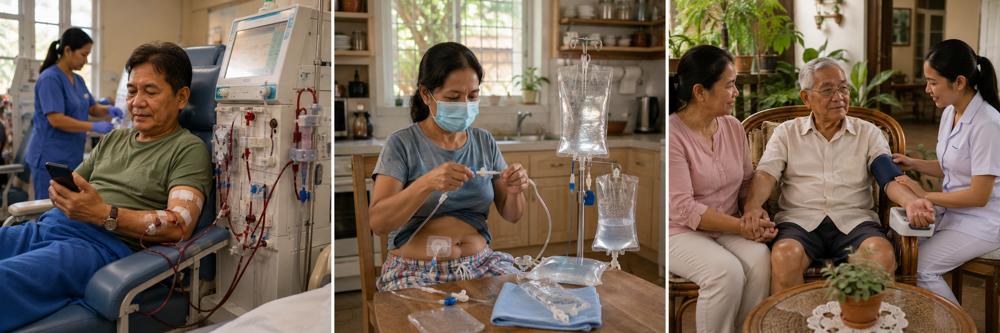
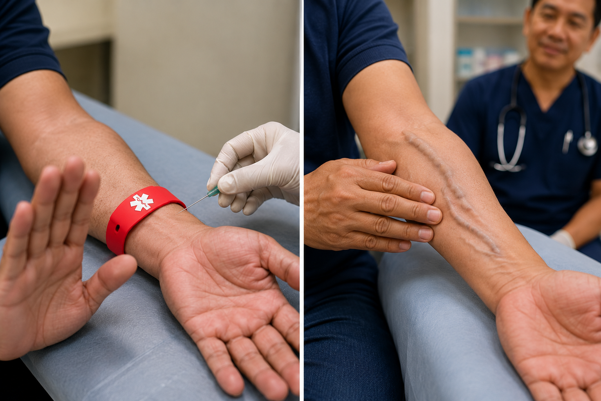
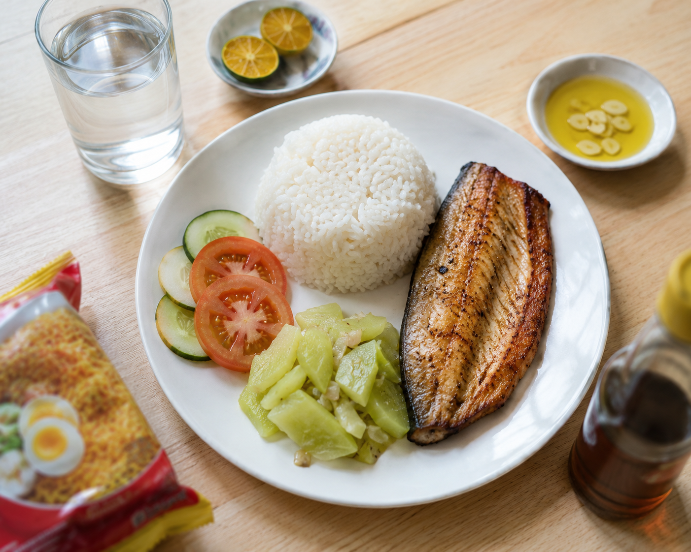
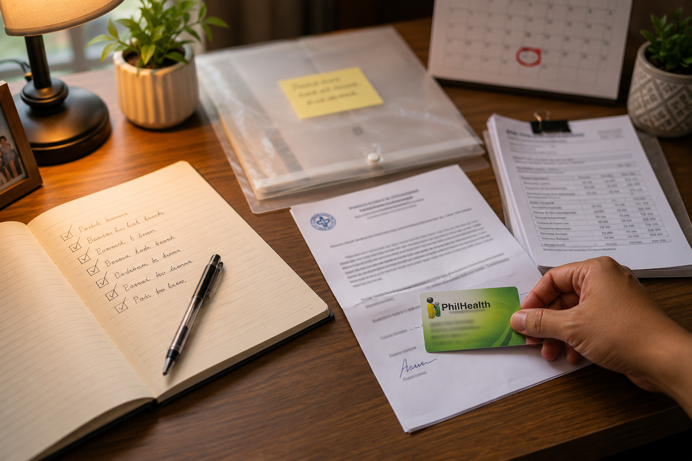
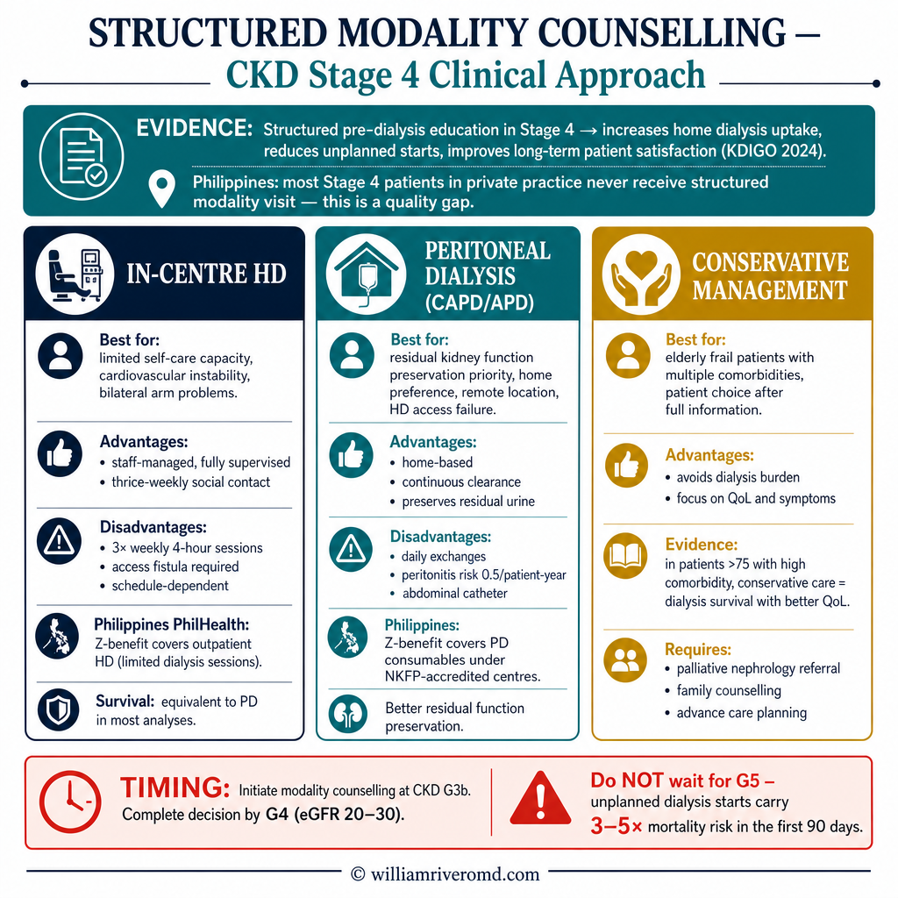
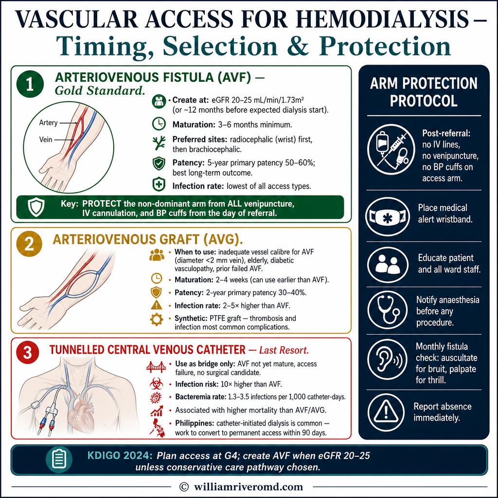
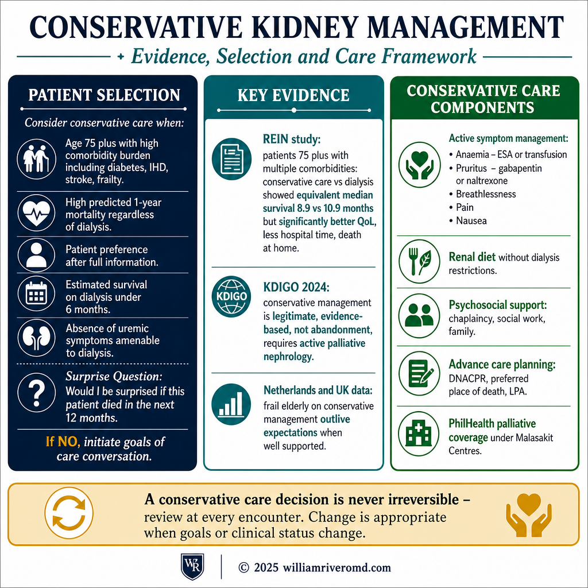

You are in the most important window of your kidney disease.Kayo ay nasa pinakamahalagang panahon ng inyong sakit sa bato.Ikaw anaa sa pinakaimportante nga panahon sa imong sakit sa kidney.Kayu ya nasa pinakamahalagang panahon ning inyoning sakit sa batu.
If your nephrologist has told you that you are in CKD Stage 4 or Stage 5 — meaning your eGFR is between 15 and 29 — you are standing at the most consequential point in the entire kidney-disease journey. The decisions you make in the next 12 to 24 months will shape the rest of your life with kidney disease. Not the decisions you make once dialysis has started. The ones you make before.Kung sinabi sa inyo ng inyong nefrologo na kayo ay nasa CKD Stage 4 o Stage 5 — ibig sabihin ang inyong eGFR ay nasa pagitan ng 15 at 29 — kayo ay nakatayo sa pinaka-kritikal na punto sa buong paglalakbay ng sakit sa bato. Ang mga desisyon na gagawin ninyo sa susunod na 12 hanggang 24 na buwan ay huhubog sa natitira pang buhay ninyo kasama ang sakit sa bato. Hindi ang mga desisyong gagawin ninyo kapag nagsimula na ang diyalisis. Ang mga gagawin ninyo bago ito.Kung gisultihan ka sa imong nephrologist nga ikaw anaa sa CKD Stage 4 o Stage 5 — nagpasabot nga ang imong eGFR anaa taliwala sa 15 ug 29 — nagtindog ka sa pinaka-kritikal nga punto sa tibuok paglalakbay sa sakit sa kidney. Ang mga desisyon nga imong buhaton sa sunod nga 12 hangtod 24 ka bulan maghulma sa nahibilin ninyong kinabuhi uban sa sakit sa kidney. Dili ang mga desisyon nga imong buhaton sa dihang nagsugod na ang diyalisis. Ang mga buhaton ninyo sa wala pa kini.Nung sinabi sa inyo ning inyong nefrologo na kayu ya nasa CKD Stage 4 o Stage 5 — ibig sabihin ing inyong eGFR ya nasa pagitan ning 15 at 29 — kayu ya nakaita sa pinaka-kritikal na punto sa buong paglalakbay nining sakit sa batu. Deng desisyon na gagawin ninyo sa susunod na 12 anggang 24 na bulan ya huhubog sa natitira paning biye ninyo kasama ining sakit sa batu. Ali deng desisyong gagawin ninyo nung nagsimula na ing diyalisis. Deng gagawin ninyo bago ini.
Six things need to happen during this window. You need to choose a treatment direction (hemodialysis, peritoneal dialysis, or conservative management). You need to plan a vascular access if you choose hemodialysis. You need to transition to a pre-dialysis diet. You need to prepare yourself and your family emotionally. You need to enrol in PhilHealth's Z-Benefit Package. And you need to keep your kidneys protected while you do all of this.Anim na bagay ang kailangang mangyari sa panahong ito. Kailangan ninyong pumili ng direksyon ng paggamot (hemodialysis, peritoneal dialysis, o conservative management). Kailangan ninyong magplano ng vascular access kung pipiliin ninyo ang hemodialysis. Kailangan ninyong lumipat sa pre-dialysis diet. Kailangan ninyong ihanda ang inyong sarili at pamilya nang emosyonal. Kailangan ninyong mag-enrol sa PhilHealth's Z-Benefit Package. At kailangan ninyong panatilihing protektado ang inyong mga bato habang ginagawa ang lahat ng ito.Unom ka butang kinahanglan mahitabo sa panahon nga ito. Kinahanglan mong pilion ang direksyon sa pagtambal (hemodialysis, peritoneal dialysis, o conservative management). Kinahanglan mong magplano og vascular access kung pilion mo ang hemodialysis. Kinahanglan mong mobalhin sa pre-dialysis diet. Kinahanglan mong andam ang imong kaugalingon ug pamilya emosyonal. Kinahanglan mong mag-enrol sa PhilHealth Z-Benefit Package. Ug kinahanglan mong padayon nga protektahan ang imong mga kidney samtang ginahimo ang tanan niini.Anim na bagay ing kailangang mangyari sa panahong ini. Kailangan ninyong pumili ning direksyon ning paggamut (hemodialysis, perinineal dialysis, o conservative management). Kailangan ninyong magplano ning vascular access nung pipiliin ninyo ing hemodialysis. Kailangan ninyong lumipat sa pre-dialysis diet. Kailangan ninyong ihanda ing inyong sarili at pamilya nang emosyonal. Kailangan ninyong mag-enrol sa PhilHealth's Z-Benefit Package. At kailangan ninyong panatilihing protektado ing inyong dening batu habang ginagawa ing lahat ning ini.
Most Filipino patients arrive at dialysis having done none of these things. They start dialysis through the emergency room, with a temporary catheter in their neck, on a treatment they did not choose. This guide exists so that does not happen to you.Karamihan sa mga pasyenteng Pilipino ay dumarating sa diyalisis nang hindi nagagawa ang isa man sa mga ito. Nagsisimula sila ng diyalisis sa pamamagitan ng emergency room, na may pansamantalang catheter sa kanilang leeg, sa isang paggamot na hindi nila pinili. Ang gabay na ito ay umiiral upang hindi ito mangyari sa inyo.Kadaghanan sa mga pasyente nga Pilipino moabot sa diyalisis nga wala mabuhat usa man niining mga butang. Nagsugod sila sa diyalisis pinaagi sa emergency room, nga adunay temporaryo nga catheter sa ilang liog, sa pagtambal nga wala nila mapili. Kining gabay naglungtad aron dili kini mahitabo kanimo.Karamihan sa deng pasyenteng Pilipino ya dumarating sa diyalisis nang ali nagagawa ing isa man sa deng ini. Nagsisimula sila ning diyalisis sa pamamagitan ning emergency room, na may pansamantalang catheter sa kanilang leeg, sa metung a paggamut na ali nila pinili. Ing gabay na ini ya umiiral para ali ini mangyari sa inyo.

What "the window" actually meansAng tunay na kahulugan ng "window"Unsa gyod ang kahulogan sa "window"Ing tunay na kahulugan ning "window"
An eGFR of 15–29 mL/min/1.73m² means your kidneys are working at roughly one quarter to one third of normal capacity. This is not a crisis — most patients in this range still feel reasonably well. But it is also not "early" disease. The ramp toward dialysis (or conservative care) is now visible. How quickly that ramp moves depends on the cause of your kidney disease, your blood pressure control, your diabetes control, and a few things partly outside your control.Ang eGFR na 15–29 mL/min/1.73m² ay nangangahulugang ang inyong mga bato ay gumagana sa humigit-kumulang isang ikaapat hanggang isang ikatlong ng normal na kapasidad. Hindi ito krisis — karamihan sa mga pasyente sa hanay na ito ay nararamdamang medyo maayos pa rin. Ngunit hindi rin ito "maaga" na sakit. Ang daan patungo sa diyalisis (o conservative care) ay nakikita na ngayon. Gaano kabilis gumalaw ang daan ay nakasalalay sa sanhi ng inyong sakit sa bato, kontrol ng presyon ng dugo, kontrol ng diabetes, at ilang bagay na bahagyang wala sa inyong kontrol.Ang eGFR nga 15–29 mL/min/1.73m² nagpasabot nga ang imong mga kidney nagtrabaho sa hapit usa ka ikaupat hangtod usa ka ikatulo sa normal nga kapasidad. Dili kini krisis — kadaghanan sa mga pasyente niining saklaw maayong gibati pa rin. Apan dili usab kini "sayo" nga sakit. Ang dalan ngadto sa diyalisis (o conservative care) makita na karon. Unsa ka dali ang paglihok nianang dalan nagsalalay sa hinungdan sa imong sakit sa kidney, kontrol sa presyon sa dugo, kontrol sa diabetes, ug pipila ka butang bahin wala sa imong kontrol.Ing eGFR na 15–29 mL/min/1.73m² ya nangangahulugang ing inyong dening batu ya gumagana sa humigit-kumulang metung a ikaapat anggang metung a ikatlong ning normal na kapasidad. Ali ini krisis — karamihan sa deng pasyente sa hanay na ini ya nararamdamang medyo maayos pa rin. Ngarud ali rin ini "maaga" na sakit. Ing daan patungo sa diyalisis (o conservative care) ya nakikita na ngayon. Gaano kabilis gumalaw ing daan ya nakasalalay sa sanhi ning inyoning sakit sa batu, kontrol nining presyon nining daya, kontrol ning diabetes, at ilang bagay na bahagyang ala king ka kontrol.
Typical timeline from this windowKaraniwang takdang-panahon mula sa panahong itoTipikal nga timeline gikan niining panahonaKaraniwang takdang-panahon mula sa panahong ini
Most Filipino patients in the eGFR 15–29 range will reach dialysis within 1 to 4 years. Some progress faster (especially with poorly-controlled diabetes or significant proteinuria); some plateau for a long time. The clinical work of the next 6 months is to find out which group you are in — and to plan accordingly.Karamihan sa mga pasyenteng Pilipino na nasa eGFR 15–29 range ay maaabot ang diyalisis sa loob ng 1 hanggang 4 na taon. Ang ilan ay mas mabilis ang pag-unlad (lalo na ang may mahinang kontroladong diabetes o makabuluhang proteinuria); ang ilan ay mananatili sa parehong antas sa matagal na panahon. Ang klinikal na trabaho ng susunod na 6 na buwan ay alamin kung alin sa grupo kayo — at planuhin nang naaayon.Kadaghanan sa mga pasyente nga Pilipino sa eGFR 15–29 range makaabot sa diyalisis sulod sa 1 hangtod 4 ka tuig. Ang uban mas dali ang pag-uswag (labi na sa hugaw nga kontroladong diabetes o dakong proteinuria); ang uban magpabilin sa sama nga antas sulod sa dugay nga panahon. Ang klinikal nga trabaho sa sunod nga 6 ka buwan mao ang mahibal-an kung asa ka ka grupo — ug magplano sumala niini.Karamihan sa deng pasyenteng Pilipino na nasa eGFR 15–29 range ya maaabot ing diyalisis sa loob ning 1 anggang 4 na banua. Ing ilan ya mas mabilis ing pag-unlad (lalo na ing may mahinang kontroladong diabetes o makabuluhang proteinuria); ing ilan ya mananatili sa parehong antas sa matagal na panahon. Ing klinikal na obran ning susunod na 6 na bulan ya alamin nung alin sa grupo kayu — at planuhin nang naaayon.
Three real choices: hemodialysis, peritoneal dialysis, or conservative care.Tatlong tunay na pagpipilian: hemodialysis, peritoneal dialysis, o conservative care.Tulo ka tinuod nga pagpili: hemodialysis, peritoneal dialysis, o conservative care.Tatlong tunay na pagpipilian: hemodialysis, perinineal dialysis, o conservative care.
The most important thing to understand is that there is a real choice here. Hemodialysis is what most people picture — but it is not the only option, and for many patients it is not the best one. Peritoneal dialysis can preserve much more independence. Conservative kidney management — focused care without dialysis — is a legitimate path for some patients, especially those who are very frail or elderly. None of these is a default. All of them require your active decision.Ang pinakamahalagang bagay na dapat maunawaan ay may tunay na pagpipilian dito. Ang hemodialysis ang iniisip ng karamihan — ngunit hindi ito ang tanging opsyon, at para sa maraming pasyente hindi ito ang pinakamainam. Ang peritoneal dialysis ay maaaring mapanatili ang mas maraming kalayaan. Ang conservative kidney management — pag-aalaga nang walang diyalisis — ay isang lehitimong landas para sa ilang pasyente, lalo na ang mga mahina o matatanda. Wala sa mga ito ang default. Lahat ng ito ay nangangailangan ng inyong aktibong desisyon.Ang pinakaimportante nga butang nga sabton mao nga adunay tinuod nga pagpili dinhi. Ang hemodialysis ang hunahunaan sa kadaghanan — apan dili kini ang bugtong nga opsyon, ug alang sa daghang pasyente dili kini ang labing maayo. Ang peritoneal dialysis makapreserba og mas daghang kagawasan. Ang conservative kidney management — pag-atiman nga walay diyalisis — usa ka lehitimong dalan alang sa pipila ka pasyente, labi na ang mga mahuyang o tigulang. Wala sa mga kini ang default. Tanan niini nagkinahanglan sa imong aktibong desisyon.Ing pinakamahalagang bagay na dapat maunawaan ya may tunay na pagpipilian dini. Ing hemodialysis ing iniisip ning karamihan — ngarud ali ini ing tanging opsyon, at para king dacal a pasyente ali ini ing pinakamainam. Ing perinineal dialysis ya maaaring mapanatili ing mas dacal a kalayaan. Ing conservative kidney management — pag-aalaga nang alang diyalisis — ya metung a lehitimong landas para king ilang pasyente, lalo na deng mahina o matatanda. Ala sa deng ini ing default. Lahat ning ini ya nangangailangan ning inyong aktibong desisyon.
Hemodialysis (HD)Hemodialysis (HD)Hemodialysis (HD)Hemodialysis (HD)
Three sessions per week, four hours each, at a dialysis center. You sit in a chair while a machine cleans your blood through a vascular access on your arm. Most common in the Philippines. Center-based — staff handle everything. Less daily responsibility, but rigid schedule and limited dietary freedom.Tatlong sesyon bawat linggo, apat na oras bawat isa, sa isang sentro ng diyalisis. Nakaupo kayo sa isang upuan habang ang isang makina ay naglilinis ng inyong dugo sa pamamagitan ng vascular access sa inyong braso. Pinaka-karaniwan sa Pilipinas. Nakabase sa sentro — ang mga kawani ang humahawak ng lahat. Mas kaunting pang-araw-araw na responsibilidad, ngunit mahigpit na iskedyul at limitadong kalayaan sa pagkain.Tulo ka sesyon matag semana, upat ka oras matag usa, sa usa ka sentro sa diyalisis. Molingkod ka sa usa ka lingkoranan samtang ang usa ka makina naglilimpyo sa imong dugo pinaagi sa vascular access sa imong bukton. Pinaka-komon sa Pilipinas. Nakabase sa sentro — ang kawani naghawak sa tanan. Mas diyotay nga adlaw-adlaw nga responsibilidad, apan mahigpit nga iskedyul ug limitado nga kalayaan sa pagkaon.Tatlong sesyon bawat lutu, apat na oras bawat isa, sa metung a sentro ning diyalisis. Nakaupo kayu sa metung a upuan habang ing metung a makina ya naglilinis ning inyoning daya sa pamamagitan ning vascular access king ka braso. Pinaka-karaniwan king Pilipinas. Nakabase sa sentro — deng kawani ing humahawak ning lahat. Mas kaunting pang-aldo-aldo na responsibilidad, ngarud mahigpit na iskedyul at limitadong kalayaan king pamangan.
Peritoneal dialysis (PD)Peritoneal dialysis (PD)Peritoneal dialysis (PD)Perinineal dialysis (PD)
Done at home, every day. A soft tube in your abdomen lets dialysis fluid wash your blood internally. Either four manual exchanges per day (CAPD) or overnight on a small machine while you sleep (APD). You keep your job and travel more freely. Higher daily self-care load — needs a clean home environment.Ginagawa sa bahay, araw-araw. Ang isang malambot na tubo sa inyong tiyan ay nagpapahintulot ng likidong diyalisis na hugasan ang inyong dugo sa loob. Maaaring apat na manu-manong palitan bawat araw (CAPD) o magdamag sa isang maliit na makina habang natutulog kayo (APD). Maaari kayong manatili sa inyong trabaho at maglakbay nang mas malaya. Mas mataas na pang-araw-araw na pag-aalaga sa sarili — nangangailangan ng malinis na kapaligiran sa bahay.Gibuhat sa balay, matag adlaw. Ang usa ka humok nga tubo sa imong tiyan nagpahintulot sa likido sa diyalisis sa paglimpyo sa imong dugo sa sulod. Mahimong upat ka manual nga palitan matag adlaw (CAPD) o sa gabii sa usa ka gamay nga makina samtang natulog ka (APD). Mapadayon mo ang imong trabaho ug maglalakbay nga mas gawasnon. Mas taas nga adlaw-adlaw nga pag-atiman sa kaugalingon — kinahanglan og malinis nga kapaligiran sa balay.Ginagawa king bale, aldo-aldo. Ing metung a malambot na tubo king ka tiyan ya nagpapahintulot ning likidong diyalisis na hugasan ing inyoning daya sa loob. Maaaring apat na manu-manong palitan bawat aldo (CAPD) o magdamag sa metung a maliit na makina habang natutulog kayu (APD). Maaari kayung manatili king ka obran at maglakbay nang mas malaya. Mas matas a pang-aldo-aldo na pag-aalaga sa sarili — nangangailangan ning malinis na kapaligiran king bale.
Conservative (no dialysis)Conservative (walang diyalisis)Conservative (walay diyalisis)Conservative (alang diyalisis)
Active medical care focused on symptom control, quality of life, and dignity — without ever starting dialysis. For very elderly or very frail patients with multiple serious illnesses, modern evidence shows survival is often similar, with fewer hospital days and better quality of life. Not "giving up" — a different goal.Aktibong medikal na pag-aalaga na nakatuon sa pagkontrol ng sintomas, kalidad ng buhay, at dignidad — nang hindi kailanman nagsisimula ng diyalisis. Para sa mga napakatanda o napakahina na pasyente na may maraming seryosong sakit, ipinakita ng modernong ebidensya na ang kaligtasan ay madalas na katulad, na may mas kaunting araw sa ospital at mas magandang kalidad ng buhay. Hindi "pagsuko" — isang ibang layunin.Aktibong medikal nga pag-atiman nga nakatuon sa kontrol sa sintomas, kalidad sa kinabuhi, ug dignidad — nga dili gayod nagsugod sa diyalisis. Alang sa mga tigulang kaayo o mahuyang kaayo nga pasyente nga adunay daghang seryosong sakit, gipakita sa modernong ebidensya nga ang pagluwas kanunay managsama, nga adunay mas diyotay nga mga adlaw sa ospital ug mas maayong kalidad sa kinabuhi. Dili "pagsurender" — lainlaing katuyoan.Aktibong medikal na pag-aalaga na nakatuon sa pagkontrol ning sintomas, kalidad nining biye, at dignidad — nang ali kailanman nagsisimula ning diyalisis. Para king deng napakatanda o napakahina na pasyente na may dacal a seryosoning sakit, ipinakita ning modernong ebidensya na ing kaligtasan ya madalas na katulad, na may mas kauntining aldo king ospital at mas magandang kalidad nining biye. Ali "pagsuko" — metung a ibang layunin.

How to think about the choicePaano pag-isipan ang pagpiliUnsaon paghunahuna sa pagpiliPaano pag-isipan ing pagpili
The right modality is the one that fits your life, your family, and your home — not the one that is most common. Some honest questions to think about:Ang tamang paraan ay ang angkop sa inyong buhay, pamilya, at tahanan — hindi ang pinaka-karaniwan. Ilang tapat na tanong na dapat pag-isipan:Ang tamang pamaagi mao ang angay sa imong kinabuhi, pamilya, ug balay — dili ang pinaka-komon. Pipila ka tapat nga pangutana nga hunahunaon:Ing tamang paraan ya ing angkop sa inyoning biye, pamilya, at tahanan — ali ing pinaka-karaniwan. Ilang tapat na tanong na dapat pag-isipan:
| Consider HD if…Isaalang-alang ang HD kung…Isipa ang HD kung…Isaalang-alang ing HD nung… | Consider PD if…Isaalang-alang ang PD kung…Isipa ang PD kung…Isaalang-alang ing PD nung… | Consider conservative if…Isaalang-alang ang conservative kung…Isipa ang conservative kung…Isaalang-alang ing conservative nung… |
|---|---|---|
| You live close to a reliable dialysis center. You prefer that staff handle the treatment. You have limited space or hygiene at home. You have a good vein for an AVF (or already have one). You cannot manage daily self-care.Nakatira kayo malapit sa mapagkakatiwalaang sentro ng diyalisis. Gusto ninyong ang mga kawani ang humawak ng paggamot. Mayroon kayong limitadong espasyo o kalinisan sa bahay. Mayroon kayong magandang ugat para sa AVF (o mayroon na). Hindi kayo makahawak ng pang-araw-araw na pag-aalaga sa sarili.Nagpuyo ka duol sa kasaligan nga sentro sa diyalisis. Gusto mo nga ang kawani ang naghawak sa pagtambal. Adunay kang limitado nga espasyo o kalinisan sa balay. Adunay kang maayong ugat alang sa AVF (o aduna na). Dili ka makahawak sa adlaw-adlaw nga pag-atiman sa kaugalingon.Nakatira kayu malapit sa mapagkakatialaang sentro ning diyalisis. Gusto ninyong deng kawani ing humawak ning paggamut. Mayroon kayung limitadong espasyo o kalinisan king bale. Mayroon kayung magandang ugat para king AVF (o mayroon na). Ali kayu makahawak ning pang-aldo-aldo na pag-aalaga sa sarili. |
You want to keep working or studying. You travel often or live far from a center. You have a clean, dry, dedicated room at home. You (or a caregiver) can do daily exchanges reliably. You want to preserve your remaining kidney function longer.Nais ninyong manatiling nagtatrabaho o nag-aaral. Madalas kayong naglalakbay o nakatira malayo sa sentro. Mayroon kayong malinis, tuyo, at dedikadong silid sa bahay. Kayo (o isang tagapag-alaga) ay maaaring gumawa ng araw-araw na palitan nang mapagkakatiwalaan. Nais ninyong mapanatili ang natitirang paggana ng bato nang mas matagal.Gusto mong padayon sa trabaho o pag-eskwela. Kanunay kang naglalakbay o nagpuyo layo sa sentro. Adunay kang malinis, uga, ug dedikadong kwarto sa balay. Ikaw (o usa ka caregiver) makahimo sa adlaw-adlaw nga palitan nga kasaligan. Gusto mong preserbar ang nabilin nga paggana sa kidney nga mas dugay.Nais ninyong manatiling nagtaobran o nag-aaral. Madalas kayung naglalakbay o nakatira malayo sa sentro. Mayroon kayung malinis, tuyo, at dedikadong silid king bale. Kayu (o metung a tagapag-alaga) ya maaaring gumawa nining aldo-aldo na palitan nang mapagkakatialaan. Nais ninyong mapanatili ing natitirang paggana nining batu nang mas matagal. |
You are very elderly (typically >80) and frail. You have multiple serious illnesses (advanced cancer, severe heart failure, advanced dementia). Dialysis is unlikely to extend life meaningfully. You and your family value comfort and home over treatment intensity.Napakataanda ninyo (karaniwang higit sa 80) at mahina. Mayroon kayong maraming seryosong sakit (advanced na kanser, matinding kabiguan ng puso, advanced na dementia). Ang diyalisis ay malamang na hindi mapahaba ang buhay nang may kahulugan. Kayo at ang inyong pamilya ay nagpapahalaga sa kaginhawahan at tahanan kaysa sa intensity ng paggamot.Tigulang kaayo ka (kasagaran >80) ug mahuyang. Adunay kang daghang seryosong sakit (advanced nga cancer, grabe nga kabiguan sa kasingkasing, advanced nga dementia). Ang diyalisis dili lagmit mapalapas ang kinabuhi nga may kahulogan. Ikaw ug ang imong pamilya nagpahalaga sa kaginhawahan ug balay labaw sa intensity sa pagtambal.Napakataanda ninyo (karaniwang higit sa 80) at mahina. Mayroon kayung dacal a seryosoning sakit (advanced na kanser, matinding kabiguan nining pusu, advanced na dementia). Ing diyalisis ya malamang na ali mapahaba ining biye nang may kahulugan. Kayu at ing inyong pamilya ya nagpapahalaga sa kaginhawahan at tahanan kaysa sa intensity ning paggamut. |
What the evidence saysAno ang sinasabi ng ebidensyaUnsa ang gisulti sa ebidensyaAno ing sinasabi ning ebidensya
For most patients under 70 who are reasonably independent, HD and PD have similar long-term survival. The difference is lifestyle, not life expectancy. PD lets you stay working and traveling; HD removes the daily responsibility but ties you to a center schedule. Filipino kidney transplant rates are still low, but if transplant is on the horizon, both HD and PD are bridges to it. The "wrong" choice is not choosing — defaulting into dialysis through an emergency room.Para sa karamihan ng mga pasyente na wala pang 70 na medyo malaya, ang HD at PD ay may katulad na pangmatagalang kaligtasan. Ang pagkakaiba ay pamumuhay, hindi inaasahang haba ng buhay. Pinahihintulutan kayo ng PD na manatiling nagtatrabaho at naglalakbay; ang HD ay nag-aalis ng pang-araw-araw na responsibilidad ngunit ginagapos kayo sa iskedyul ng sentro. Ang mga rate ng kidney transplant sa Pilipinas ay mababa pa rin, ngunit kung ang transplant ay nasa abot-tanaw, ang parehong HD at PD ay tulay dito. Ang "maling" pagpili ay hindi pagpili — ang pagtanggap ng diyalisis sa pamamagitan ng emergency room.Alang sa kadaghanan sa mga pasyente nga ubos sa 70 nga medyo gawasnon, ang HD ug PD adunay managsama nga pangtagal nga pagluwas. Ang kalainan mao ang estilo sa kinabuhi, dili ang gidugayon sa kinabuhi. Ang PD nagpahintulot kanimo sa pagpadayon sa trabaho ug paglalagaw; ang HD nagkuha sa adlaw-adlaw nga responsibilidad apan nagbugkos kanimo sa iskedyul sa sentro. Ang mga rate sa kidney transplant sa Pilipinas ubos pa rin, apan kung ang transplant anaa sa abot, ang pareho nga HD ug PD mga tulay niini. Ang "sayop" nga pagpili mao ang dili pagpili — ang pagdawat sa diyalisis pinaagi sa emergency room.Para king karamihan ning deng pasyente na ala pang 70 na medyo malaya, ang HD at PD ya may katulad na pangmatagalang kaligtasan. Ing pagkakaiba ya pamumuhay, ali inaasahang haba nining biye. Pinahihintulutan kayu ning PD na manatiling nagtaobran at naglalakbay; ing HD ya nag-aalis ning pang-aldo-aldo na responsibilidad ngarud ginagapos kayu sa iskedyul ning sentro. Deng rate nining kidney transplant king Pilipinas ya mababa pa rin, ngarud nung ing transplant ya nasa abot-tanaw, ing parehong HD at PD ya tulay dini. Ing "maling" pagpili ya ali pagpili — ing pagtanggap ning diyalisis sa pamamagitan ning emergency room.
If you choose hemodialysis, your access must be planned now.Kung pipiliin ninyo ang hemodialysis, ang inyong access ay dapat planuhín ngayon.Kung pilion mo ang hemodialysis, ang imong access kinahanglan planuhon karon.Nung pipiliin ninyo ing hemodialysis, ing inyong access ya dapat planuhín ngayon.
This is the single most important sentence in this guide for HD-bound patients: an arteriovenous fistula (AVF) takes 3 to 6 months to mature before it can be used. If you wait until your eGFR is 8 or 10 to think about access, it is too late — you will start dialysis through a temporary catheter in your neck, with a much higher risk of infection and a worse first year of treatment. The right time to place an AVF is when your eGFR is around 20 to 25.Ito ang pinaka-mahalagang pangungusap sa gabay na ito para sa mga pasyenteng patungo sa HD: ang arteriovenous fistula (AVF) ay nangangailangan ng 3 hanggang 6 na buwan upang maging handa bago ito magamit. Kung hihintayin ninyo na ang inyong eGFR ay 8 o 10 bago pag-isipan ang access, huli na — magsisimula kayo ng diyalisis sa pamamagitan ng pansamantalang catheter sa inyong leeg, na may mas mataas na panganib ng impeksyon at mas masahol na unang taon ng paggamot. Ang tamang oras para maglagay ng AVF ay kapag ang inyong eGFR ay nasa paligid ng 20 hanggang 25.Mao kini ang pinaka-importanteng pangungusap niining gabay alang sa mga pasyente nga patungo sa HD: ang arteriovenous fistula (AVF) nagkinahanglan og 3 hangtod 6 ka bulan sa pag-mature sa dili pa kini magamit. Kung maghulat ka hangtod nga ang imong eGFR 8 o 10 sa dili pa hunahunaon ang access, ulahi na — magsugod ka sa diyalisis pinaagi sa temporaryo nga catheter sa imong liog, nga adunay mas taas nga peligro sa impeksyon ug mas daotan nga unang tuig sa pagtambal. Ang tamang panahon sa pagbutang sa AVF mao kung ang imong eGFR mga 20 hangtod 25.Ini ing pinaka-mahalagang pangungusap sa gabay na ini para king deng pasyenteng patungo sa HD: ang arteriovenous fistula (AVF) ya nangangailangan ning 3 anggang 6 na bulan para maging handa bago ini magamit. Nung hihintayin ninyo na ing inyong eGFR ya 8 o 10 bago pag-isipan ing access, huli na — magsisimula kayu ning diyalisis sa pamamagitan ning pansamantalang catheter king ka leeg, na may mas matas a panganib ning impeksyon at mas masahol na unaning banua ning paggamut. Ing tamang oras para maglagay ning AVF ya nung ing inyong eGFR ya nasa paligid ning 20 anggang 25.
An AVF is the safest, longest-lasting hemodialysis access. A small surgery (usually in the wrist or upper arm, under local anaesthesia, as an outpatient) connects an artery to a vein. Over the next 8 to 24 weeks, the vein thickens and grows under the higher pressure — this is "maturation." Once mature, it provides reliable, low-infection-risk access for years.Ang AVF ay ang pinaka-ligtas at pinakamatagal na access sa hemodialysis. Ang isang maliit na operasyon (karaniwang sa pulso o itaas ng braso, sa ilalim ng lokal na anaesthesia, bilang outpatient) ay nagkokonekta ng isang arterya sa isang ugat. Sa susunod na 8 hanggang 24 na linggo, ang ugat ay humihilab at lumalaki sa ilalim ng mas mataas na presyon — ito ay "maturation." Kapag naging handa na, nagbibigay ito ng maaasahang, mababang-panganib-sa-impeksyon na access sa loob ng maraming taon.Ang AVF mao ang pinaka-luwas ug pinaka-dugay nga access sa hemodialysis. Ang usa ka gamay nga operasyon (kasagaran sa pulso o ibabaw sa bukton, ubos sa lokal nga anaesthesia, isip outpatient) nagkonekta sa usa ka arterya sa usa ka ugat. Sa sunod nga 8 hangtod 24 ka semana, ang ugat nagbaga ug nagdako ubos sa mas taas nga presyon — mao kini ang "maturation." Sa dihang mature na, naghatag kini og kasaligan, ubos-peligro-sa-impeksyon nga access sulod sa daghang tuig.Ing AVF ya ing pinaka-ligtas at pinakamatagal na access sa hemodialysis. Ing metung a maliit na operasyon (karaniwang sa pulso o itaas ning braso, sa ilalim ning lokal na anaesthesia, bilang outpatient) ya nagkokonekta ning metung a arterya sa metung a ugat. Sa susunod na 8 anggang 24 na lutu, ing ugat ya humihilab at lumalaki sa ilalim ning mas matas a presyon — ini ya "maturation." Nung naging handa na, nagbibigay ini ning maaasahang, mababang-panganib-sa-impeksyon na access sa loob ning maramining banua.
The alternatives — AV grafts (synthetic tube) and tunneled catheters — exist for situations where an AVF is not possible, but they have higher infection rates and shorter lifespans. Plan for an AVF first, fall back to alternatives only if necessary.Ang mga alternatibo — AV grafts (synthetic tube) at tunneled catheters — ay mayroon para sa mga sitwasyon kung saan ang AVF ay hindi posible, ngunit mayroon silang mas mataas na rate ng impeksyon at mas maikling buhay. Planuhin ang AVF muna, lumipat lamang sa mga alternatibo kung kinakailangan.Ang mga alternatibo — AV grafts (synthetic tube) ug tunneled catheters — naglungtad alang sa mga sitwasyon kung diin ang AVF dili posible, apan adunay sila og mas taas nga rate sa impeksyon ug mas mubo nga kinabuhi. Magplano alang sa AVF una, mobalik sa mga alternatibo lamang kung gikinahanglan.Deng alternatibo — AV grafts (synthetic tube) at tunneled catheters — ya mayroon para king deng sitwasyon nung saan ing AVF ya ali posible, ngarud mayroon silang mas matas a rate ning impeksyon at mas maiklining biye. Planuhin ing AVF muna, lumipat lamang sa deng alternatibo nung kinakailangan.

The access planning timelineAng takdang-panahon ng pagpaplano ng accessAng timeline sa pagplano sa accessIng takdang-panahon ning pagpaplano ning access
If you choose peritoneal dialysis, the timing is differentKung pipiliin ninyo ang peritoneal dialysis, ang timing ay naiibaKung pilion mo ang peritoneal dialysis, ang timing lainNung pipiliin ninyo ing perinineal dialysis, ing timing ya naiiba
The PD catheter (a Tenckhoff catheter) is placed in your abdomen 2 to 4 weeks before you actually need to start dialysis — much later than an AVF. The "break-in" period is brief. But you still need to choose PD now so your home can be prepared, the catheter surgery can be scheduled, and PhilHealth coverage can be arranged. More on PD catheter care here.Ang PD catheter (isang Tenckhoff catheter) ay inilalagay sa inyong tiyan 2 hanggang 4 na linggo bago talaga kayong kailangang magsimula ng diyalisis — mas matagal kaysa sa AVF. Ang "break-in" na panahon ay maikli. Ngunit kailangan pa rin ninyong piliin ang PD ngayon upang ang inyong tahanan ay maihanda, ang operasyon ng catheter ay maiaayos, at ang saklaw ng PhilHealth ay maisaayos. Karagdagang impormasyon tungkol sa pag-aalaga ng PD catheter dito.Ang PD catheter (usa ka Tenckhoff catheter) gibutang sa imong tiyan 2 hangtod 4 ka semana sa wala pa ka tinuod nga kinahanglan magsugod sa diyalisis — mas ulahi kaysa sa AVF. Ang "break-in" nga panahon mubo. Apan kinahanglan pa mong pilion ang PD karon aron ang imong balay maandam, ang operasyon sa catheter maplanuhan, ug ang sakop sa PhilHealth maayos. Dugang impormasyon bahin sa pag-atiman sa PD catheter dinhi.Ing PD catheter (metung a Tenckhoff catheter) ya inilalagay king ka tiyan 2 anggang 4 na lutu bago talaga kayung kailangang magsimula ning diyalisis — mas matagal kaysa sa AVF. Ing "break-in" na panahon ya maikli. Ngarud kailangan pa rin ninyong piliin ing PD ngayon para ing inyong tahanan ya maihanda, ing operasyon ning catheter ya maiaayos, at ing saklaw ning PhilHealth ya maisaayos. Karagdagang impormasyon tungkol sa pag-aalaga ning PD catheter dini.
The number-one access mistake in the PhilippinesAng pangunahing pagkakamali sa access sa PilipinasAng numero-uno nga sayop sa access sa PilipinasIng pangunahing pagkakamali sa access king Pilipinas
Starting hemodialysis through a temporary internal jugular (neck) catheter because the AVF was placed too late or never placed. This happens to roughly half of new Filipino HD patients. The temporary catheter causes a 10-fold higher infection rate in the first year, doubles your hospitalisation rate, and worsens long-term mortality. The fix is simple: plan AVF placement at eGFR 20–25, not at the moment of crisis.Ang pagsisimula ng hemodialysis sa pamamagitan ng pansamantalang internal jugular (leeg) catheter dahil ang AVF ay nalagay nang huli o hindi kailanman nalagay. Nangyayari ito sa halos kalahati ng mga bagong pasyenteng Pilipino na may HD. Ang pansamantalang catheter ay nagdudulot ng 10 beses na mas mataas na rate ng impeksyon sa unang taon, nagdoble ng inyong rate ng ospitalisasyon, at nagpapalala ng pangmatagalang mortalidad. Ang solusyon ay simple: planuhin ang paglalagay ng AVF sa eGFR 20–25, hindi sa sandali ng krisis.Ang pagsugod sa hemodialysis pinaagi sa temporaryo nga internal jugular (liog) catheter tungod kay ang AVF gibutang nang ulahi o wala gyod gibutang. Kini mahitabo sa hapit katunga sa mga bag-ong pasyente nga Pilipino nga adunay HD. Ang temporaryo nga catheter nagdala og 10 ka beses nga mas taas nga rate sa impeksyon sa unang tuig, nagdoble sa imong rate sa pag-ospital, ug nagpasamot sa pangtagal nga mortalidad. Ang solusyon yano: magplano sa pagbutang sa AVF sa eGFR 20–25, dili sa higayon sa krisis.Ing pagsisimula ning hemodialysis sa pamamagitan ning pansamantalang internal jugular (leeg) catheter dahil ing AVF ya nalagay nang huli o ali kailanman nalagay. Nangyayari ini sa halos kalahati ning deng bagong pasyenteng Pilipino na may HD. Ing pansamantalang catheter ya nagdudulot ning 10 beses na mas matas a rate ning impeksyon sa unaning banua, nagdoble ning inyong rate ning ospitalisasyon, at nagpapalala ning pangmatagalang mortalidad. Ing solusyon ya simple: planuhin ing paglalagay ning AVF sa eGFR 20–25, ali sa sandali ning krisis.
The pre-dialysis diet: different from the dialysis diet.Ang pre-dialysis diet: iba sa dialysis diet.Ang pre-dialysis diet: lahi sa dialysis diet.Ing pre-dialysis diet: iba king dialysis diet.
One of the most confusing things about CKD Stage 4–5 is that the dietary advice now is not the same as the dietary advice once you are on dialysis. The pre-dialysis diet is designed to slow kidney damage, control blood pressure, and prevent uremic symptoms — typically lower-protein and very low-sodium. The dialysis diet is designed to replace what dialysis cannot fully clean and is often higher in protein.Isa sa mga pinaka-nakakalitong bagay tungkol sa CKD Stage 4–5 ay ang payo sa diyeta ngayon ay hindi katulad ng payo sa diyeta kapag nagsimula na kayo sa diyalisis. Ang pre-dialysis diet ay dinisenyo upang mapabagal ang pinsala sa bato, kontrolin ang presyon ng dugo, at maiwasan ang mga sintomas ng uremia — karaniwang mas mababa ang protina at napakababa ng sodium. Ang dialysis diet ay dinisenyo upang palitan ang hindi lubusang nililinis ng diyalisis at madalas na mas mataas ang protina.Usa sa mga pinaka-nakapalibog nga butang bahin sa CKD Stage 4–5 mao nga ang payo sa diyeta karon dili katumbas sa payo sa diyeta sa dihang nagsugod ka na sa diyalisis. Ang pre-dialysis diet gidesinyo aron mapahina ang kadaot sa kidney, kontrolon ang presyon sa dugo, ug mapugong ang mga sintomas sa uremia — kasagaran mas ubos ang protina ug hapit walay sodium. Ang dialysis diet gidesinyo aron mapulihan ang dili lubos nga nalilimpyohan sa diyalisis ug kanunay mas taas ang protina.Isa sa deng pinaka-nakakalining bagay tungkol sa CKD Stage 4–5 ya ing payo king diyeta ngayon ya ali katulad ning payo king diyeta nung nagsimula na kayu sa diyalisis. Ing pre-dialysis diet ya dinisenyo para mapabagal ing pinsala sa batu, kontrolin ining presyon nining daya, at maiwasan deng sintomas ning uremia — karaniwang mas mababa ing protina at napakababa ning sodium. Ing dialysis diet ya dinisenyo para palitan ing ali lubusang nililinis ning diyalisis at madalas na mas mataas ing protina.
SodiumSodiumSodiumSodium
Aggressive reduction. <2 g sodium/day (~5 g salt). No patis, no toyo, no Maggi cubes, no instant noodles, no processed meats. This is the single most modifiable factor in slowing kidney decline. Full Filipino-food sodium guide.Agresibong pagbabawas. <2 g sodium/araw (~5 g asin). Walang patis, walang toyo, walang Maggi cubes, walang instant noodles, walang processed meats. Ito ang pinaka-nababagong salik sa pagpapabagal ng pagbaba ng bato. Kumpletong gabay sa sodium sa pagkaing Pilipino.Agresibong pagpaminus. <2 g sodium/adlaw (~5 g asin). Walay patis, walay toyo, walay Maggi cubes, walay instant noodles, walay processed meats. Mao kini ang pinaka-mabag-o nga salik sa pagpahina sa pagkahulog sa kidney. Kumpleto nga gabay sa sodium sa pagkaong Pilipino.Agresibong pagbabawas. <2 g sodium/aldo (~5 g asin). Alang patis, alang toyo, alang Maggi cubes, alang instant noodles, alang processed meats. Ini ing pinaka-nababagong salik sa pagpapabagal ning pagbaba nining batu. Kumpletong gabay sa sodium king pamangang Pilipino.
ProteinProtinaProtinaProtina
Moderate restriction. 0.6–0.8 g/kg/day in pre-dialysis CKD (this is roughly one palm-sized serving of fish or chicken per day for a 60-kg adult). Once you start dialysis, this jumps to 1.0–1.2 g/kg/day. Discuss any protein change with your nephrologist or renal dietitian.Katamtamang paghihigpit. 0.6–0.8 g/kg/araw sa pre-dialysis CKD (ito ay halos isang palad-sukat na serving ng isda o manok bawat araw para sa isang 60-kg na matanda). Kapag nagsimula na kayo sa diyalisis, tataas ito sa 1.0–1.2 g/kg/araw. Talakayin ang anumang pagbabago sa protina kasama ang inyong nefrologo o renal dietitian.Katamtamang pagpugong. 0.6–0.8 g/kg/adlaw sa pre-dialysis CKD (kini hapit usa ka palad-sukat nga serving sa isda o manok matag adlaw alang sa usa ka 60-kg nga hamtong). Sa dihang magsugod ka na sa diyalisis, mosaka kini sa 1.0–1.2 g/kg/adlaw. Hisgutan ang bisan unsang pagbag-o sa protina uban sa imong nephrologist o renal dietitian.Katamtamang paghihigpit. 0.6–0.8 g/kg/aldo sa pre-dialysis CKD (ini ya halos metung a palad-sukat na serving ning isda o manok bawat aldo para king metung a 60-kg na matanda). Nung nagsimula na kayu sa diyalisis, tataas ini sa 1.0–1.2 g/kg/aldo. Talakayin ing anumang pagbabago sa protina kasama ing inyong nefrologo o renal dietitian.
Potassium & phosphorusPotassium at phosphorusPotassium ug phosphorusPotassium at phosphorus
Limit if your blood levels are rising. Foods to watch: buko juice, bananas, oranges, tomato sauce, kamote tops, dried fish, processed cheese, soft drinks (cola). Your nephrologist will tell you how strict to be based on your monthly bloodwork.Limitahan kung ang inyong mga antas sa dugo ay tumataas. Mga pagkain na dapat bantayan: buko juice, saging, dalandan, tomato sauce, talbos ng kamote, tuyo, processed cheese, soft drinks (cola). Sasabihin sa inyo ng inyong nefrologo kung gaano kastrict batay sa inyong buwanang bloodwork.Limitahan kung ang imong mga antas sa dugo mosaka. Mga pagkaon nga bantayan: buko juice, saging, dalandan, tomato sauce, talbos sa kamote, tuyo, processed cheese, soft drinks (cola). Sultihan ka sa imong nephrologist kung unsa ka estrikto base sa imong buwanang bloodwork.Limitahan nung ing inyong deng antas sa daya ya tumataas. Dening pamangan na dapat bantayan: buko juice, saging, dalandan, tomato sauce, talbos ning kamote, tuyo, processed cheese, soft drinks (cola). Sasabihin sa inyo ning inyong nefrologo nung gaano kastrict batay sa inyoning bulanang bloodwork.

Fluid: usually still free at this stageLikido: karaniwang malaya pa sa yugtong itoTubig: kasagaran gawasnon pa sa yugto nga itoLikido: karaniwang malaya pa sa yugtong ini
Unlike dialysis patients, most pre-dialysis patients can still drink to thirst as long as they are urinating normally. Fluid restriction starts when urine output drops or you develop swelling — typically after dialysis begins. Do not restrict fluids on your own — ask your nephrologist when (and if) it should start.Hindi tulad ng mga pasyenteng naka-dialysis, karamihan sa mga pre-dialysis na pasyente ay maaari pa ring uminom hanggang sa hindi na sila nauuhaw hanggang umiihi sila nang normal. Ang paghihigpit sa likido ay nagsisimula kapag bumaba ang output ng ihi o nagkaroon kayo ng pamamaga — karaniwang pagkatapos magsimula ang diyalisis. Huwag limitahan ang likido nang mag-isa — tanungin ang inyong nefrologo kung kailan (at kung) ito ay dapat magsimula.Dili sama sa mga pasyente nga naka-dialysis, kadaghanan sa mga pre-dialysis nga pasyente makainom pa hangtod dili na sila uhaw basta normal ang ilang pag-ihi. Ang pagpugong sa tubig nagsugod kung mobaba ang output sa ihi o magmugna og pamaga — kasagaran human magsugod ang diyalisis. Ayaw limitaha ang tubig sa imong kaugalingon — pangutana ang imong nephrologist kung kanus-a (ug kung) kini kinahanglan magsugod.Ali tulad ning deng pasyenteng naka-dialysis, karamihan sa deng pre-dialysis na pasyente ya maaari pa ring uminom anggang sa ali na sila nauuhaw anggang umiihi sila nang normal. Ing paghihigpit sa likido ya nagsisimula nung bumaba ing output ning ihi o nagkaroon kayu ning pamamaga — karaniwang kapabanuan magsimula ing diyalisis. Eka limitahan ing likido nang mag-isa — tanungin ing inyong nefrologo nung kailan (at nung) ini ya dapat magsimula.
One realistic pre-dialysis day on a Filipino plateIsang makatotohanang pre-dialysis na araw sa Pilipinong platoUsa ka makatinuod nga pre-dialysis nga adlaw sa Pilipinong platoIsang makatotohanang pre-dialysis na aldo sa Pilipinong plato
- Breakfast: 1 cup of rice, 1 small piece of grilled fish (no patis), 1 boiled egg, slices of cucumber and tomato.Almusal: 1 tasa ng kanin, 1 maliit na piraso ng inihaw na isda (walang patis), 1 pinakuluang itlog, mga hiwa ng pipino at kamatis.Pamahaw: 1 tasa sa kan-on, 1 gamay nga piraso sa inihaw nga isda (walay patis), 1 niluto nga itlog, mga hiwa sa pipino ug kamatis.Almusal: 1 tasa ning kanin, 1 maliit na piraso ning inihaw na isda (alang patis), 1 pinakuluang itlog, deng hiwa ning pipino at kamatis.
- Lunch: 1 cup of rice, half cup ginisang sayote (no Magic Sarap), 1 piece adobong manok (small thigh), pinakbet without bagoong.Tanghalian: 1 tasa ng kanin, kalahating tasa ng ginisang sayote (walang Magic Sarap), 1 piraso ng adobong manok (maliit na hita), pinakbet na walang bagoong.Paniudto: 1 tasa sa kan-on, katunga ka tasa sa ginisang sayote (walay Magic Sarap), 1 piraso sa adobong manok (gamay nga paa), pinakbet nga walay bagoong.Tanghalian: 1 tasa ning kanin, kalahating tasa ning ginmetung a sayote (alang Magic Sarap), 1 piraso ning adobong manok (maliit na hita), pinakbet na alang bagoong.
- Dinner: 1 cup rice, sinigang na isda made with sampalok concentrate (no instant mix), ½ cup sautéed kalabasa.Hapunan: 1 tasa ng kanin, sinigang na isda na gawa sa sampalok concentrate (walang instant mix), ½ tasa ng ginisang kalabasa.Panihapon: 1 tasa sa kan-on, sinigang na isda nga gihimo sa sampalok concentrate (walay instant mix), ½ tasa sa ginisang kalabasa.Hapunan: 1 tasa ning kanin, sinigang na isda na gawa sa sampalok concentrate (alang instant mix), ½ tasa ning ginmetung a kalabasa.
- Avoid: instant noodles, hotdogs, tocino, longganisa, canned sardines/corned beef, salted eggs, dried fish, soft drinks, store-bought sauces.Iwasan: instant noodles, hotdogs, tocino, longganisa, de-latang sardinas/corned beef, itlog na maalat, tuyo, soft drinks, mga sarsa na binili sa tindahan.Likayi: instant noodles, hotdogs, tocino, longganisa, de-lata nga sardinas/corned beef, itlog nga asin, tuyo, soft drinks, mga sarsa nga gipalit sa tindahan.Iwasan: instant noodles, hotdogs, tocino, longganisa, de-latang sardinas/corned beef, itlog na maalat, tuyo, soft drinks, deng sarsa na binili sa tindahan.
Preparing your mind, your family, and your work.Paghahanda ng inyong isipan, pamilya, at trabaho.Pag-andam sa imong hunahuna, pamilya, ug trabaho.Paghahanda ning inyong isipan, pamilya, at obran.
Almost every patient remembers two moments in their CKD journey: the first time they heard the word "kidney failure," and the day dialysis actually began. The space between those moments — the months you are in right now — is when the emotional work either happens, or doesn't. The patients who do this work cope better; the ones who don't tend to crash hard at the start of dialysis.
What patients actually feelAng tunay na nararamdaman ng mga pasyenteUnsa gyod ang gibati sa mga pasyenteIng tunay na nararamdaman ning deng pasyente
- Anger: at doctors who didn't catch it earlier, at family members who don't understand, at God or fate.Galit: sa mga doktor na hindi ito nahuli nang mas maaga, sa mga miyembro ng pamilya na hindi nakakaunawa, sa Diyos o tadhana.Kasuko: sa mga doktor nga wala kini mamatikdan nang mas sayo, sa mga miyembro sa pamilya nga wala makasabut, sa Diyos o kapalaran.Galit: sa deng doktor na ali ini nahuli nang mas maaga, sa deng miyembro ning pamilya na ali nakakaunawa, sa Diyos o tadhana.
- Grief: over the body that worked, the future that is changing.Kalungkutan: sa katawang gumana, sa kinabukasang nagbabago.Pagbangotan: sa lawas nga nagtrabaho, sa kaugmaon nga nagbag-o.Kalungkutan: sa bangkîg gumana, sa kinabukasang nagbabago.
- Bargaining: "if I follow the diet perfectly, will my kidneys come back?" (They will not — but you can slow things down a lot.)Pakikiusap: "kung susundin ko nang perpekto ang diyeta, babalik ba ang aking mga bato?" (Hindi — ngunit maaari mong pabagalin nang malaki ang mga bagay.)Pakigsabot: "kung sundon nako nang perpekto ang diyeta, mobalik ba ang akong mga kidney?" (Dili — apan mapahinay nimo ang mga butang nang daghan.)Pakikiusap: "nung susundin ko nang perpekto ing diyeta, babalik ba ing aking dening batu?" (Ali — ngarud maaari mong pabagalin nang malaki deng bagay.)
- Fear: of the needles, of dependency, of being a burden, of dying.Takot: sa mga karayom, sa pag-asa sa iba, sa pagiging pabigat, sa pagkamatay.Kahadlok: sa mga dagom, sa pag-asa sa uban, sa pagkahimong lulan, sa kamatayon.Takot: sa deng karayom, sa pag-asa sa iba, sa pagiging pabigat, sa pagkamatay.
- Eventually — acceptance, and a different kind of normal.Sa kalaunan — pagtanggap, at isang ibang uri ng normal.Sa katapusan — pagdawat, ug lainlaing klase sa normal.Sa kalaunan — pagtanggap, at metung a ibang uri ning normal.
What helps, in real lifeAno ang nakatutulong, sa totoong buhayUnsa ang nakaatabang, sa tinuod nga kinabuhiAno ing nakatutulong, sa totooning biye
- Visit a dialysis center while you're still well. Demystify it. Talk to a patient who has been on dialysis for a few years — most will say the first few months were the hardest.Bisitahin ang isang sentro ng diyalisis habang maayos pa kayo. Alisin ang hiwaga nito. Makipag-usap sa isang pasyente na ilang taon nang naka-dialysis — karamihan ay sasabihing ang unang ilang buwan ang pinakamahirap.Bisitaha ang usa ka sentro sa diyalisis samtang maayo ka pa. Tangtanga ang hiwaga niini. Makigsulti sa usa ka pasyente nga pipila na ka tuig naka-dialysis — kadaghanan moingon nga ang unang pipila ka bulan ang pinakamabudlay.Bisitahin ing metung a sentro ning diyalisis habang maayos pa kayu. Alisin ing hiwaga nini. Makipag-usap sa metung a pasyente na ilaning banua nang naka-dialysis — karamihan ya sasabihing ing unang ilaning bulan ing pinakamahirap.
- Tell your immediate family early. Don't make them piece it together later. Bring your spouse or adult child to your nephrology visits.Sabihin sa inyong agarang pamilya nang maaga. Huwag silang pabigyan ng trabahong buuin ito sa ibang pagkakataon. Dalhin ang inyong asawa o matandang anak sa inyong mga pagbisita sa nefrolohiya.Sultihi ang imong duol nga pamilya nang sayo. Ayaw sila pabutanga niini sa ulahi. Dad-a ang imong kaasawa o hamtong nga anak sa imong mga pagbisita sa nefrolohiya.Sabihin king ka agarang pamilya nang maaga. Eka silang pabigyan ning obranng buuin ini sa ibang pagkakabanua. Dalhin ing inyong asawa o matandang anak king ka deng pagbisita sa nefrolohiya.
- Plan your work. If you have a flexible job, tell your employer once you have a treatment plan. PD patients often keep working full-time.Planuhin ang inyong trabaho. Kung mayroon kayong nababagong trabaho, sabihin sa inyong employer kapag mayroon na kayong plano sa paggamot. Ang mga pasyenteng PD ay madalas na nagtatrabaho nang full-time.Planuha ang imong trabaho. Kung adunay ka flexible nga trabaho, sultihi ang imong employer sa dihang aduna naka plano sa pagtambal. Ang mga pasyente nga PD kanunay nagpadayon sa trabaho full-time.Planuhin ing inyong obran. Nung mayroon kayung nababagong obran, sabihin king ka employer nung mayroon na kayung plano sa paggamut. Deng pasyenteng PD ya madalas na nagtaobran nang full-time.
- Talk to a counsellor or your priest, pastor, or imam. Faith and structured emotional support both help — and they help differently.Makipag-usap sa isang counsellor o sa inyong pari, pastor, o imam. Ang pananampalataya at nakabalangkas na emosyonal na suporta ay parehong nakatutulong — at nakatutulong nang naiiba.Makigsulti sa usa ka counsellor o sa imong pari, pastor, o imam. Ang pagtuo ug nakabalangkas nga emosyonal nga suporta pareho nakaatabang — ug nakaatabang nang lainlain.Makipag-usap sa metung a counsellor o king ka pari, pastor, o imam. Ing pananampalataya at nakabalangkas na emosyonal na suporta ya parehong nakatutulong — at nakatutulong nang naiiba.
- Don't wait for depression to declare itself. If you have lost interest in food, family, or sleep for more than 2 weeks, ask your nephrologist for a referral.Huwag hintayin na magpahayag ang depresyon. Kung nawalan kayo ng interes sa pagkain, pamilya, o tulog nang higit sa 2 linggo, humingi ng referral mula sa inyong nefrologo.Ayaw huwata nga magpakita ang depresyon. Kung nawad-an ka og interes sa pagkaon, pamilya, o pagtulog sulod sa labaw sa 2 ka semana, mangayo og referral gikan sa imong nephrologist.Eka hintayin na magpahayag ing depresyon. Nung naalan kayu ning interes king pamangan, pamilya, o tulog nang higit sa 2 lutu, humingi ning referral mula king ka nefrologo.
For the familyPara sa pamilyaAlang sa pamilyaPara king pamilya
Filipino families are extraordinary at showing up — but the most helpful thing in the pre-dialysis window is not heroic acts. It is presence at clinic visits, willingness to learn the diet alongside the patient, honesty about what the household can and cannot afford, and a clear conversation about who will be the back-up support if dialysis becomes home-based (PD). Start these conversations now, not the week before treatment begins.Ang mga pamilyang Pilipino ay kahanga-hanga sa pagpapakita — ngunit ang pinaka-nakatutulong na bagay sa pre-dialysis window ay hindi mga bayanihanang gawa. Ito ay presensya sa mga pagbisita sa klinika, pagkahandang matuto ng diyeta kasama ang pasyente, katapatan tungkol sa kung ano ang kaya at hindi kaya ng sambahayan, at isang malinaw na pag-uusap tungkol sa kung sino ang magiging back-up na suporta kung ang diyalisis ay magiging home-based (PD). Simulan ang mga pag-uusap na ito ngayon, hindi noong linggo bago magsimula ang paggamot.Ang mga pamilyang Pilipino talagsaon sa pagpakita — apan ang pinaka-nakaatabang nga butang sa pre-dialysis window dili mga bayanihanong buhat. Kini ang presensya sa mga pagbisita sa klinika, pagkaandam sa pagkat-on sa diyeta kauban ang pasyente, katinuoran bahin sa kung unsa ang kaya ug dili kaya sa pamilya, ug usa ka klaro nga pag-istorya bahin sa kung kinsa ang mahimong back-up nga suporta kung ang diyalisis mahimong home-based (PD). Sugdi kining mga pag-istorya karon, dili sa semana sa wala pa magsugod ang pagtambal.Deng pamilyang Pilipino ya kahanga-hanga sa pagpapakita — ngarud ing pinaka-nakatutulong na bagay sa pre-dialysis window ya ali deng bayanihanang gawa. Ini ya presensya sa deng pagbisita king klinika, pagkahandang matuto ning diyeta kasama ing pasyente, katapatan tungkol sa nung ano ing kaya at ali kaya ning sambalean, at metung a malinaw na pag-uusap tungkol sa nung sino ing magiging back-up na suporta nung ing diyalisis ya magiging home-based (PD). Simulan deng pag-uusap na ini ngayon, ali nooning lutu bago magsimula ing paggamut.
Conservative kidney management: not the same as giving up.Conservative kidney management: hindi kapareho ng pagsuko.Conservative kidney management: dili pareho sa pagsurender.Conservative kidney management: ali kapareho ning pagsuko.
For some patients — especially those who are very elderly, very frail, or living with multiple serious illnesses — dialysis may not extend life meaningfully and may worsen the time that is left. Conservative kidney management (sometimes called "conservative care" or "supportive care") is the path of active medical care without ever starting dialysis. It is a legitimate, evidence-based choice. It is not abandonment.Para sa ilang pasyente — lalo na ang mga napakatanda, napakahina, o namumuhay na may maraming seryosong sakit — ang diyalisis ay maaaring hindi mapahaba ang buhay nang may kahulugan at maaaring magpalala ng natitirang panahon. Ang conservative kidney management (minsan tinatawag na "conservative care" o "supportive care") ay ang landas ng aktibong medikal na pag-aalaga nang hindi kailanman nagsisimula ng diyalisis. Ito ay isang lehitimo, nakabase sa ebidensyang pagpili. Hindi ito pag-abandona.Alang sa pipila ka pasyente — labi na ang mga tigulang kaayo, mahuyang kaayo, o nagpuyo nga adunay daghang seryosong sakit — ang diyalisis mahimong dili mapalapas ang kinabuhi nga may kahulogan ug mahimong magpasamot sa nabilin nga panahon. Ang conservative kidney management (usahay gitawag nga "conservative care" o "supportive care") mao ang dalan sa aktibong medikal nga pag-atiman nga dili gayod nagsugod sa diyalisis. Usa kini ka lehitimo, nakabase sa ebidensyang pagpili. Dili kini pagbiya.Para king ilang pasyente — lalo na deng napakatanda, napakahina, o namumuhay na may dacal a seryosoning sakit — ing diyalisis ya maaaring ali mapahaba ining biye nang may kahulugan at maaaring magpalala ning natitirang panahon. Ing conservative kidney management (misan tinatawag na "conservative care" o "supportive care") ya ing landas ning aktibong medikal na pag-aalaga nang ali kailanman nagsisimula ning diyalisis. Ini ya metung a lehitimo, nakabase sa ebidensyang pagpili. Ali ini pag-abandona.
What conservative care actually involves: excellent symptom management (treating itching, nausea, breathlessness, pain), careful blood pressure and anemia control, dietary support for comfort rather than restriction, fluid balance through diuretics, and home-centerd care with hospice or palliative-care involvement. The goal is not to extend life as long as possible — it is to make the time that remains as comfortable, present, and meaningful as possible.Ano talaga ang kasama sa conservative care: mahusay na pamamahala ng sintomas (paggamot ng pangangati, pagduduwal, hirap sa paghinga, sakit), maingat na kontrol ng presyon ng dugo at anemia, dietary support para sa kaginhawahan kaysa sa paghihigpit, balanse ng likido sa pamamagitan ng diuretics, at pag-aalaga sa tahanan na may hospice o palliative-care na kasangkot. Ang layunin ay hindi ang pahabain ang buhay nang matagal hangga't maaari — ito ay gawing kasing-komportable, kasalukuyan, at makabuluhan ang natitirang panahon.Unsa gyod ang kasama sa conservative care: maayo nga pamamahala sa sintomas (pagtambal sa pangangalawit, pagkaduol, kabudlay sa paghingal, sakit), maingon nga kontrol sa presyon sa dugo ug anemia, dietary support alang sa kaginhawahan kaysa sa pagpugong, balanse sa tubig pinaagi sa diuretics, ug pag-atiman nga nakasentro sa balay nga adunay hospice o palliative-care nga kasangkot. Ang katuyoan dili ang palapason ang kinabuhi hangtod sa mahimo — kini mao ang himuon nga ang nabilin nga panahon ingon ka-komportable, presente, ug may kahulogan kutob sa mahimo.Ano talaga ing kasama sa conservative care: mahusay na pamamahala ning sintomas (paggamut ning pangangati, pagduduwal, hirap sa paghinga, sakit), maingat na kontrol nining presyon nining daya at anemia, dietary support para king kaginhawahan kaysa sa paghihigpit, balanse ning likido sa pamamagitan ning diuretics, at pag-aalaga sa tahanan na may hospice o palliative-care na kasangkot. Ing layunin ya ali ing pahabain ining biye nang matagal hangga't maaari — ini ya gawing kasing-komportable, kasalukuyan, at makabuluhan ing natitirang panahon.
For patients over 80 with multiple serious illnesses, modern evidence shows that conservative care often produces similar survival to dialysis, with fewer hospitalisations and better quality of life. For younger or healthier patients, dialysis usually extends life meaningfully. The decision is personal, and your nephrologist should be willing to discuss it openly.Para sa mga pasyente na higit sa 80 na may maraming seryosong sakit, ipinakita ng modernong ebidensya na ang conservative care ay madalas na nagbubunga ng katulad na kaligtasan sa diyalisis, na may mas kaunting mga ospitalisasyon at mas magandang kalidad ng buhay. Para sa mas batang o mas malusog na mga pasyente, ang diyalisis ay karaniwang nagpapahaba ng buhay nang may kahulugan. Ang desisyon ay personal, at ang inyong nefrologo ay dapat handang talakayin ito nang bukas.Alang sa mga pasyente nga labaw sa 80 nga adunay daghang seryosong sakit, gipakita sa modernong ebidensya nga ang conservative care kanunay nagprodyus og managsamang pagluwas sa diyalisis, nga adunay mas diyotay nga mga pag-ospital ug mas maayong kalidad sa kinabuhi. Alang sa mas bata o mas maayong mga pasyente, ang diyalisis kasagaran nagpalapas sa kinabuhi nga may kahulogan. Ang desisyon personal, ug ang imong nephrologist kinahanglan andam nga hisgutan kini nang bukas.Para king deng pasyente na higit sa 80 na may dacal a seryosoning sakit, ipinakita ning modernong ebidensya na ang conservative care ya madalas na nagbubunga ning katulad na kaligtasan sa diyalisis, na may mas kaunting deng ospitalisasyon at mas magandang kalidad nining biye. Para king mas batang o mas malusog na deng pasyente, ing diyalisis ya karaniwang nagpapahaba nining biye nang may kahulugan. Ing desisyon ya personal, at ing inyong nefrologo ya dapat handang talakayin ini nang bukas.
If conservative management is the right path for you or your family member, see the dedicated advance care planning guide for the full conversation about goals of care, surrogate decision-makers, and family discussions.Kung ang conservative management ay ang tamang landas para sa inyo o sa inyong miyembro ng pamilya, tingnan ang dedikadong gabay sa advance care planning para sa kumpletong pag-uusap tungkol sa mga layunin ng pag-aalaga, mga kahaliling gumagawa ng desisyon, at mga talakayan sa pamilya.Kung ang conservative management mao ang tamang dalan alang kanimo o sa imong miyembro sa pamilya, tan-awa ang dedikadong gabay sa advance care planning alang sa tibuok nga pag-istorya bahin sa mga katuyoan sa pag-atiman, mga surrogate nga nagdesisyon, ug mga pakigsulti sa pamilya.Nung ing conservative management ya ing tamang landas para king inyo o king ka miyembro ning pamilya, tingnan ing dedikadong gabay sa advance care planning para king kumpletong pag-uusap tungkol sa deng layunin ning pag-aalaga, deng kahaliling gumagawa ning desisyon, at deng talakayan sa pamilya.
PhilHealth Z-Benefit Package: enrol now, before you need it.PhilHealth Z-Benefit Package: mag-enrol ngayon, bago pa ninyo kailanganin.PhilHealth Z-Benefit Package: mag-enrol karon, sa dili pa nimo kini kinahanglan.PhilHealth Z-Benefit Package: mag-enrol ngayon, bago pa ninyo kailanganin.
PhilHealth's Z-Benefit Package for End-Stage Renal Disease covers a substantial portion of dialysis costs in accredited facilities. But it requires paperwork, accreditation, and several visits to set up. The patients who arrive at dialysis with their PhilHealth Z-Benefit already in place have far less financial chaos in their first year. The ones who don't can spend the first three months of dialysis trying to navigate the system while also adapting to a new treatment.Ang PhilHealth Z-Benefit Package para sa End-Stage Renal Disease ay sumasaklaw ng malaking bahagi ng mga gastos sa diyalisis sa mga accredited na pasilidad. Ngunit nangangailangan ito ng mga papeles, akredentasyon, at ilang pagbisita upang maayos. Ang mga pasyenteng dumarating sa diyalisis na may PhilHealth Z-Benefit na nasa lugar na ay may mas kaunting pinansiyal na kaguluhan sa kanilang unang taon. Ang mga hindi ay maaaring gumastos ng unang tatlong buwan ng diyalisis na sinusubukang mag-navigate sa sistema habang umaangkop din sa isang bagong paggamot.Ang PhilHealth Z-Benefit Package alang sa End-Stage Renal Disease nasakop sa dakong bahin sa mga gastos sa diyalisis sa mga accredited nga pasilidad. Apan nagkinahanglan kini og mga papeles, akreditasyon, ug pipila ka pagbisita aron maandam. Ang mga pasyente nga moabot sa diyalisis nga adunay PhilHealth Z-Benefit nga anaa na sa lugar adunay mas diyotay nga pinansiyal nga kaguloan sa ilang unang tuig. Ang mga wala mahimong mogugol sa unang tulo ka bulan sa diyalisis nga naningkamot sa pag-navigate sa sistema samtang nag-adapt usab sa bag-ong pagtambal.Ing PhilHealth Z-Benefit Package para king End-Stage Renal Disease ya sumasaklaw ning malda a bahagi ning deng gastos sa diyalisis sa deng accredited na pasilidad. Ngarud nangangailangan ini ning deng papeles, akredentasyon, at ilang pagbisita para maayos. Deng pasyenteng dumarating sa diyalisis na may PhilHealth Z-Benefit na nasa lugar na ya may mas kaunting pinanyal na kaguluhan sa kanilang unaning banua. Deng ali ya maaaring gumastos ning unang tatloning bulan ning diyalisis na sinusubukang mag-navigate sa sistema habang umaangkop din sa metung a bagong paggamut.
What PhilHealth covers (current as of 2026)Ano ang saklaw ng PhilHealth (kasalukuyan noong 2026)Unsa ang sakop sa PhilHealth (kasalukuyan noong 2026)Ano ing saklaw ning PhilHealth (kasalukuyan noong 2026)
| BenefitBenepisyoBenepisyoBenepisyo | What it coversAno ang saklaw nitoUnsa ang iyang sakopAno ing saklaw nini | What it does not coverAno ang hindi nito saklawUnsa ang wala niyang sakopAno ing ali nini saklaw |
|---|---|---|
| Outpatient HD | Up to 144 hemodialysis sessions per year (about 3/week) in accredited centers. Includes the dialysis treatment, basic medications, and lab monitoring.Hanggang 144 na sesyon ng hemodialysis bawat taon (humigit-kumulang 3/linggo) sa mga accredited na sentro. Kasama ang paggamot sa diyalisis, mga pangunahing gamot, at monitoring ng lab.Hangtod 144 ka sesyon sa hemodialysis matag tuig (hapit 3/semana) sa mga accredited nga sentro. Naglakip sa pagtambal sa diyalisis, mga pangunahing tambal, ug monitoring sa lab.Anggang 144 na sesyon ning hemodialysis bawat banua (humigit-kumulang 3/lutu) sa deng accredited na sentro. Kasama ing paggamut sa diyalisis, deng pangunahining gamut, at moniniring ning lab. | Erythropoietin (EPO), iron infusions, intravenous vitamin D, transport to center, food, missed-session fees.Erythropoietin (EPO), iron infusions, intravenous na vitamin D, transportasyon sa sentro, pagkain, bayad sa napalaktaw na sesyon.Erythropoietin (EPO), iron infusions, intravenous nga vitamin D, transportasyon sa sentro, pagkaon, bayad sa nalaktaw nga sesyon.Erythropoietin (EPO), iron infusions, intravenous na vitamin D, transportasyon sa sentro, pamangan, bayad sa napalaktaw na sesyon. |
| Peritoneal dialysis | PD fluid and consumables, catheter placement, training, and peritonitis treatment in accredited centers.PD fluid at consumables, paglalagay ng catheter, pagsasanay, at paggamot sa peritonitis sa mga accredited na sentro.PD fluid ug consumables, pagbutang sa catheter, pagsanay, ug pagtambal sa peritonitis sa mga accredited nga sentro.PD fluid at consumables, paglalagay ning catheter, pagsasanay, at paggamut sa perininitis sa deng accredited na sentro. | The home cycler (APD machine), home modifications, household electricity for storage, transport for monthly clinic visits.Ang home cycler (APD machine), mga pagbabago sa bahay, kuryente sa bahay para sa imbakan, transportasyon para sa buwanang pagbisita sa klinika.Ang home cycler (APD machine), mga pagbag-o sa balay, kuryente sa balay alang sa pagtipig, transportasyon alang sa buwanang pagbisita sa klinika.Ing home cycler (APD machine), deng pagbabago king bale, kuryente king bale para king imbakan, transportasyon para king bulanang pagbisita king klinika. |
| Z-Benefit Package | A bundled, additional benefit for patients who meet criteria — covers a defined first-year cost ceiling for HD or PD.Isang nakabalot, karagdagang benepisyo para sa mga pasyenteng nakakatugon sa pamantayan — sumasaklaw ng tinukoy na cost ceiling ng unang taon para sa HD o PD.Usa ka nakabalot, karagdagang benepisyo alang sa mga pasyente nga nakatugon sa sukdanan — nasakop ang tinukoy nga cost ceiling sa unang tuig alang sa HD o PD.Isang nakabalot, karagdagang benepisyo para king deng pasyenteng nakakatugon sa pamantayan — sumasaklaw ning tinukoy na cost ceiling ning unaning banua para king HD o PD. | Costs above the ceiling, complications requiring hospitalisation, transplant work-up.Mga gastos na higit sa ceiling, mga komplikasyon na nangangailangan ng ospitalisasyon, transplant work-up.Mga gastos nga labaw sa ceiling, mga komplikasyon nga nagkinahanglan sa pag-ospital, transplant work-up.Deng gastos na higit sa ceiling, deng komplikasyon na nangangailangan ning ospitalisasyon, transplant work-up. |

The PhilHealth pre-ESKD enrolment checklistAng checklist ng PhilHealth pre-ESKD enrolmentAng checklist sa PhilHealth pre-ESKD enrolmentIng checklist ning PhilHealth pre-ESKD enrolment
- Ensure your PhilHealth membership is active — verify in person at a PhilHealth office or via the Member Portal. Pay any back-contributions if you are a self-employed/voluntary member.Tiyakin na aktibo ang inyong membership sa PhilHealth — i-verify nang personal sa isang opisina ng PhilHealth o sa pamamagitan ng Member Portal. Bayaran ang anumang back-contributions kung kayo ay isang self-employed/voluntary na miyembro.Siguruhon nga aktibo ang imong membership sa PhilHealth — i-verify nang personal sa usa ka opisina sa PhilHealth o pinaagi sa Member Portal. Bayaran ang bisan unsang back-contributions kung ikaw usa ka self-employed/voluntary nga miyembro.Tiyakin na aktibo ing inyong membership sa PhilHealth — i-verify nang personal sa metung a opisina ning PhilHealth o sa pamamagitan ning Member Portal. Bayaran ing anumang back-contributions nung kayu ya metung a self-employed/voluntary na miyembro.
- Add your spouse and dependents if not already declared — this matters if a family caregiver will be the principal member during your treatment.Idagdag ang inyong asawa at mga dependent kung hindi pa naidineklara — mahalaga ito kung ang isang caregiver sa pamilya ang magiging pangunahing miyembro sa panahon ng inyong paggamot.Idugang ang imong kaasawa ug mga dependent kung wala pa ideklara — importante kini kung ang usa ka caregiver sa pamilya ang mahimong principal nga miyembro sa panahon sa imong pagtambal.Idagdag ing inyong asawa at deng dependent nung ali pa naidineklara — mahalaga ini nung ing metung a caregiver sa pamilya ing magiging pangunahing miyembro sa panahon ning inyong paggamut.
- Get the Z-Benefit application form from your nephrologist or accredited dialysis center. Required documents typically include the MD certification, a recent eGFR, and an ICD-10 diagnosis code.Kumuha ng Z-Benefit application form mula sa inyong nefrologo o accredited na sentro ng diyalisis. Ang mga kinakailangang dokumento ay karaniwang kinabibilangan ng MD certification, isang kamakailang eGFR, at isang ICD-10 diagnosis code.Kumuha sa Z-Benefit application form gikan sa imong nephrologist o accredited nga sentro sa diyalisis. Ang mga gikinahanglan nga dokumento kasagaran naglakip sa MD certification, bag-ong eGFR, ug ICD-10 diagnosis code.Kumuha ning Z-Benefit application form mula king ka nefrologo o accredited na sentro ning diyalisis. Deng kinakailangang dokumento ya karaniwang kinabibilangan ning MD certification, metung a kamakailang eGFR, at metung a ICD-10 diagnosis code.
- Choose an accredited dialysis facility — confirm in writing that the center is currently PhilHealth-Z-accredited, not just PhilHealth-accredited.Pumili ng accredited na pasilidad ng diyalisis — kumpirmahin nang nakasulat na ang sentro ay kasalukuyang PhilHealth-Z-accredited, hindi lamang PhilHealth-accredited.Pilia ang accredited nga pasilidad sa diyalisis — kumpirmahin sa sinulat nga ang sentro kasalukuyan PhilHealth-Z-accredited, dili lamang PhilHealth-accredited.Pumili ning accredited na pasilidad ning diyalisis — kumpirmahin nang nakasulat na ing sentro ya kasalukuyang PhilHealth-Z-accredited, ali lamang PhilHealth-accredited.
- Coordinate with the center's PhilHealth liaison — every accredited center has one. Bring your application package and your nephrologist's referral letter.Makipag-ugnayan sa PhilHealth liaison ng sentro — bawat accredited na sentro ay mayroong isa. Dalhin ang inyong application package at ang referral letter ng inyong nefrologo.Makig-ugnayan sa PhilHealth liaison sa sentro — matag accredited nga sentro adunay usa. Dad-a ang imong application package ug ang referral letter sa imong nephrologist.Makipag-ugnayan sa PhilHealth liaison ning sentro — bawat accredited na sentro ya mayroong isa. Dalhin ing inyong application package at ing referral letter ning inyong nefrologo.
- For Indigent or Senior-Citizen members: bring your Senior Citizen ID, MSWDO certificate, or 4Ps documentation as applicable — these affect your premium status and waiting periods.Para sa Indigent o Senior-Citizen na mga miyembro: dalhin ang inyong Senior Citizen ID, MSWDO certificate, o 4Ps documentation kung naaangkop — nakakaapekto ang mga ito sa inyong premium status at mga panahon ng paghihintay.Alang sa Indigent o Senior-Citizen nga mga miyembro: dad-a ang imong Senior Citizen ID, MSWDO certificate, o 4Ps documentation kung primero — nakaapekto kini sa imong premium status ug mga panahon sa paghulat.Para king Indigent o Senior-Citizen na deng miyembro: dalhin ing inyong Senior Citizen ID, MSWDO certificate, o 4Ps documentation nung naaangkop — nakakaapekto deng ini king ka premium status at deng panahon ning paghihintay.
- Keep a folder with all original receipts, certifications, and forms — both physical and a phone-photo backup. The system runs on paper.Magtago ng folder na may lahat ng orihinal na resibo, sertipikasyon, at mga form — parehong pisikal at phone-photo backup. Ang sistema ay gumagana sa papel.Mag-tipig og folder nga adunay tanang orihinal nga resibo, sertipikasyon, ug mga form — pareho nga pisikal ug phone-photo backup. Ang sistema nagdagan sa papel.Magtago ning folder na may lahat ning orihinal na resibo, sertipikasyon, at deng form — parehong pisikal at phone-photo backup. Ing sistema ya gumagana sa papel.
The realistic cost pictureAng makatotohanang larawan ng gastosAng makatinuod nga hulagway sa gastosIng makatotohanang laldoan ning gastos
Even with PhilHealth Z-Benefit fully active, most Filipino dialysis patients have out-of-pocket costs of PHP 8,000–25,000 per month for things PhilHealth does not fully cover (EPO, iron, transport, food, missed sessions, occasional hospitalisations). Discuss this honestly with your family now. Some patients access additional support through PCSO, DSWD's Medical Assistance Program (MAP), or local government LGU programs — your social worker can help navigate these.Kahit na ang PhilHealth Z-Benefit ay ganap na aktibo, karamihan sa mga pasyenteng Pilipino na may diyalisis ay may out-of-pocket na gastos na PHP 8,000–25,000 bawat buwan para sa mga bagay na hindi ganap na saklaw ng PhilHealth (EPO, iron, transportasyon, pagkain, napalaktaw na sesyon, paminsan-minsang ospitalisasyon). Talakayin ito nang tapat sa inyong pamilya ngayon. Ang ilang pasyente ay nakakakuha ng karagdagang suporta sa pamamagitan ng PCSO, DSWD's Medical Assistance Program (MAP), o mga lokal na programa ng pamahalaan ng LGU — ang inyong social worker ay makatutulong na mag-navigate sa mga ito.Bisan pa nga ang PhilHealth Z-Benefit ganap nga aktibo, kadaghanan sa mga pasyente nga Pilipino nga adunay diyalisis adunay out-of-pocket nga gastos nga PHP 8,000–25,000 matag bulan alang sa mga butang nga dili ganap nga sakop sa PhilHealth (EPO, iron, transportasyon, pagkaon, nalaktaw nga sesyon, usahay pag-ospital). Hisgutan kini nang tapat sa imong pamilya karon. Ang pipila ka pasyente nakakuha og karagdagang suporta pinaagi sa PCSO, DSWD's Medical Assistance Program (MAP), o mga lokal nga programa sa pamahalaan sa LGU — ang imong social worker makaatabang sa pag-navigate niini.Kahit na ing PhilHealth Z-Benefit ya ganap na aktibo, karamihan sa deng pasyenteng Pilipino na may diyalisis ya may out-of-pocket na gastos na PHP 8,000–25,000 bawat bulan para king deng bagay na ali ganap na saklaw ning PhilHealth (EPO, iron, transportasyon, pamangan, napalaktaw na sesyon, pamisan-misang ospitalisasyon). Talakayin ini nang tapat king ka pamilya ngayon. Ing ilang pasyente ya nakakakuha ning karagdagang suporta sa pamamagitan ning PCSO, DSWD's Medical Assistance Program (MAP), o deng lokal na programa ning pamahalaan ning LGU — ing inyong social worker ya makatutulong na mag-navigate sa deng ini.
What needs to happen, and when — by your eGFR.Ano ang kailangang mangyari, at kailan — ayon sa inyong eGFR.Unsa ang kinahanglan mahitabo, ug kanus-a — base sa imong eGFR.Ano ing kailangang mangyari, at kailan — ayon king ka eGFR.
If you remember nothing else from this guide, remember this table. It is the unified timeline of everything that should happen between now and the day dialysis starts (or doesn't).Kung wala na kayong maaalala sa gabay na ito, alalahanin ang talahanayan na ito. Ito ang pinag-isang timeline ng lahat ng dapat mangyari sa pagitan ngayon at ng araw na magsisimula ang diyalisis (o hindi).Kung wala na kay mahinumdoman gikan niini nga gabay, hinumdomi kining lamesa. Kini ang pinaghiusang timeline sa tanan nga kinahanglan mahitabo tali karon ug sa adlaw nga magsugod ang diyalisis (o dili).Nung ala na kayung maaalala sa gabay na ini, alalahanin ing talahanayan na ini. Ini ing pinag-metung a timeline ning lahat ning dapat mangyari sa pagitan ngayon at nining aldo na magsisimula ing diyalisis (o ali).
| Your eGFRAng inyong eGFRAng imong eGFRIng inyong eGFR | Modality & accessModalidad at accessModalidad ug accessModalidad at access | Diet & lifestyleDiyeta at pamumuhayDiyeta ug pamatiDiyeta at pamumuhay | PhilHealth & financialPhilHealth at pananalapiPhilHealth ug pinansyalPhilHealth at pananalapi | Emotional & familyEmosyonal at pamilyaEmosyonal ug pamilyaEmosyonal at pamilya |
|---|---|---|---|---|
| 25–29 (early Stage 4)(maagang Stage 4)(sayo nga Stage 4)(maagang Stage 4) |
Modality counselling. Tour an HD center and a PD center. Vein-mapping referral. Begin protecting the non-dominant arm.Pagpapayo sa modalidad. Bisitahin ang isang sentro ng HD at isang sentro ng PD. Referral para sa vein-mapping. Simulan ang pagprotekta sa hindi-dominanteng braso.Pagpayong sa modalidad. Bisitaha ang HD center ug PD center. Referral alang sa vein-mapping. Sugdi ang pagprotekta sa dili-dominant nga bukton.Pagpapayo sa modalidad. Bisitahin ing metung a sentro ning HD at metung a sentro ning PD. Referral para king vein-mapping. Simulan ing pagprotekta sa ali-dominanteng braso. | Strict sodium reduction. Moderate protein (0.6–0.8 g/kg/d). Stop NSAIDs.Mahigpit na pagbabawas ng sodium. Katamtamang protina (0.6–0.8 g/kg/d). Ihinto ang NSAIDs.Mahigpit nga pagkunhod sa sodium. Katamtamang protina (0.6–0.8 g/kg/d). Hunongon ang NSAIDs.Mahigpit na pagbabawas ning sodium. Katamtamang protina (0.6–0.8 g/kg/d). Ihinto ing NSAIDs. | Verify PhilHealth is active. Update dependents.I-verify na aktibo ang PhilHealth. I-update ang mga dependent.I-verify nga aktibo ang PhilHealth. I-update ang mga dependent.I-verify na aktibo ing PhilHealth. I-update deng dependent. | Tell immediate family. Bring spouse to nephro visits.Ipaalam sa malapit na pamilya. Dalhin ang asawa sa mga pagbisita sa nephrologist.Ipahibalo sa pinakalapit nga pamilya. Dad-a ang kaasawa sa mga pagbisita sa nephrologist.Ipaalam sa malapit na pamilya. Dalhin ing asawa sa deng pagbisita sa nephrologist. |
| 20–25 (mid Stage 4)(gitna ng Stage 4)(tunga sa Stage 4)(gitna ning Stage 4) |
Modality decision. If HD: place AVF now. If PD: choose center, plan home space.Desisyon sa modalidad. Kung HD: ilagay ang AVF ngayon. Kung PD: pumili ng sentro, planuhin ang espasyo sa bahay.Desisyon sa modalidad. Kung HD: ibutang ang AVF karon. Kung PD: pilia ang sentro, planuha ang espasyo sa balay.Desisyon sa modalidad. Nung HD: ilagay ing AVF ngayon. Nung PD: pumili ning sentro, planuhin ing espasyo king bale. | Continue diet. Start renal-dietitian visits if available. Watch for early uremic symptoms.Ituloy ang diyeta. Magsimula ng mga pagbisita sa renal-dietitian kung available. Bantayan ang maagang sintomas ng uremia.Ipadayon ang diyeta. Magsugod sa mga pagbisita sa renal-dietitian kung available. Bantayan ang sayo nga sintomas sa uremia.Ituloy ing diyeta. Magsimula ning deng pagbisita sa renal-dietitian nung available. Bantayan ing maagang sintomas ning uremia. | Begin Z-Benefit application. Choose a Z-accredited center.Simulan ang Z-Benefit application. Pumili ng Z-accredited na sentro.Sugdi ang Z-Benefit application. Pilia ang Z-accredited nga sentro.Simulan ing Z-Benefit application. Pumili ning Z-accredited na sentro. | Visit a dialysis center while well. Begin counselling if anxious.Bisitahin ang isang sentro ng diyalisis habang malusog pa. Magsimula ng counselling kung nababahala.Bisitaha ang sentro sa diyalisis samtang maayo pa. Magsugod sa counselling kung nabalaka.Bisitahin ing metung a sentro ning diyalisis habang malusog pa. Magsimula ning counselling nung nababahala. |
| 15–20 (early Stage 5)(maagang Stage 5)(sayo nga Stage 5)(maagang Stage 5) |
AVF maturation surveillance (monthly). PD home preparation if PD chosen. Backup access plan if AVF struggling.Surveillance sa paghinog ng AVF (buwanan). Paghahanda ng bahay para sa PD kung pinili ang PD. Backup na plano sa access kung nahirapan ang AVF.Surveillance sa pagkahinog sa AVF (buwanan). Paghanda sa balay para sa PD kung gipili ang PD. Backup nga plano sa access kung naglisod ang AVF.Surveillance sa paghinog ning AVF (bulanan). Paghahanda ning bale para king PD nung pinili ing PD. Backup na plano sa access nung nahirapan ing AVF. | Adjust protein/potassium based on labs. Monitor for fluid overload signs.I-adjust ang protina/potassium batay sa mga lab. Bantayan ang mga palatandaan ng labis na likido.I-adjust ang protina/potassium base sa mga lab. Bantayan ang mga timailhan sa sobrang tubig sa lawas.I-adjust ing protina/potassium batay sa deng lab. Bantayan deng palatandaan ning labis na likido. | Z-Benefit fully approved and on file at chosen center.Z-Benefit ganap na naaprubahan at nasa file sa piniling sentro.Z-Benefit ganap nga aprubado ug anaa sa file sa gipiling sentro.Z-Benefit ganap na naaprubahan at nasa file sa piniling sentro. | Plan work transition. Tell employer if HD-bound.Planuhin ang paglipat sa trabaho. Ipaalam sa employer kung magsisimula ng HD.Planuha ang pagbalhin sa trabaho. Ipahibalo sa employer kung magsugod sa HD.Planuhin ing paglipat king obran. Ipaalam sa employer nung magsisimula ning HD. |
| 10–15 (late Stage 5)(huling bahagi ng Stage 5)(ulahi nga Stage 5)(huling bahagi ning Stage 5) |
AVF cannulation testing. PD catheter placement (2–4 wk before need). Confirm center admission process.Pagsubok sa cannulation ng AVF. Paglalagay ng PD catheter (2–4 linggo bago kailanganin). Kumpirmahin ang proseso ng admission sa sentro.Pagsulay sa cannulation sa AVF. Pagbutang sa PD catheter (2–4 semana sa wala pa kini kinahanglan). Kumpirmahin ang proseso sa admission sa sentro.Pagsubok sa cannulation ning AVF. Paglalagay ning PD catheter (2–4 lutu bago kailanganin). Kumpirmahin ing proseso ning admission sa sentro. | Pre-dialysis diet may transition toward dialysis-style as start nears.Ang diyeta bago ang diyalisis ay maaaring lumipat sa estilo ng diyalisis habang nalalapit ang simula.Ang diyeta sa wala pa ang diyalisis mahimong mobalhin ngadto sa estilo sa diyalisis samtang nagduol na ang pagsugod.Ing diyeta bago ing diyalisis ya maaaring lumipat sa estilo ning diyalisis habang nalalapit ing simula. | Confirm transport arrangements (3×/week is a logistics challenge).Kumpirmahin ang mga ayos sa transportasyon (ang 3×/linggo ay isang hamon sa logistik).Kumpirmahin ang mga ayos sa transportasyon (ang 3×/semana usa ka hagit sa logistics).Kumpirmahin deng ayos sa transportasyon (ang 3×/lutu ya metung a hamon sa logistik). | Final family briefing. Identify primary caregiver.Huling briefing sa pamilya. Tukuyin ang pangunahing tagapag-alaga.Katapusang briefing sa pamilya. Tukuya ang pangunahing tagacharon.Huling briefing sa pamilya. Tukuyin ing pangunahing tagapag-alaga. |
| <10 or symptoms<10 o may sintomas<10 o adunay sintomas<10 o may sintomas | Planned dialysis initiation — through mature AVF or PD catheter, on a chosen schedule, at a chosen center. The goal of all the above.Planadong pagsisimula ng diyalisis — sa pamamagitan ng hinog na AVF o PD catheter, sa isang piniling iskedyul, sa isang piniling sentro. Ang layunin ng lahat ng nasa itaas.Planado nga pagsugod sa diyalisis — pinaagi sa hinog nga AVF o PD catheter, sa gipiling iskedyul, sa gipiling sentro. Ang tumong sa tanan sa ibabaw.Planadong pagsisimula ning diyalisis — sa pamamagitan ning hinog na AVF o PD catheter, sa metung a piniling iskedyul, sa metung a piniling sentro. Ing layunin ning lahat ning nasa itaas. | Transition to dialysis diet (higher protein, lower potassium/phosphorus per labs).Lumipat sa diyeta para sa diyalisis (mas mataas na protina, mas mababang potassium/phosphorus ayon sa mga lab).Mobalhin sa diyeta sa diyalisis (mas taas nga protina, mas ubos nga potassium/phosphorus base sa mga lab).Lumipat king diyeta para king diyalisis (mas matas a protina, mas mababang potassium/phosphorus ayon sa deng lab). | First Z-Benefit cycle activates.Unang cycle ng Z-Benefit ay mag-aaktibo.Unang cycle sa Z-Benefit mag-activate.Unang cycle ning Z-Benefit ya mag-aaktibo. | You are not alone — you walked in prepared.Hindi kayo nag-iisa — pumasok kayo nang handa.Dili ka mag-inusara — misulod ka nga andam.Ali kayu nag-iisa — pumasok kayu nang handa. |
Questions to ask your nephrologist this month.Mga tanong na itatanong sa inyong nefrologo ngayong buwan.Mga pangutana nga itatanong sa imong nephrologist niining buwana.Deng tanong na itatanong king ka nefrologo ngayoning bulan.
The most useful clinic visits are the ones where you arrive with questions written down. Here are the questions that matter at your stage. Bring them. Print them. Ask all of them.Ang pinakakapaki-pakinabang na mga pagbisita sa klinika ay ang mga kung saan darating kayo na may mga nakasulatang tanong. Narito ang mga tanong na mahalaga sa inyong yugto. Dalhin ang mga ito. I-print ang mga ito. Itanong ang lahat ng mga ito.Ang pinaka-mapuslanon nga mga pagbisita sa klinika mao ang mga diin moabot ka nga adunay mga gisulat nga pangutana. Ania ang mga pangutana nga importante sa imong yugto. Dad-a kini. I-print kini. Pangutana ang tanan.Ing pinakakapaki-pakinabang na deng pagbisita king klinika ya deng nung saan darating kayu na may deng nakasulatang tanong. Narini deng tanong na mahalaga king ka yugto. Dalhin deng ini. I-print deng ini. Itanong ing lahat ning deng ini.
About your trajectoryTungkol sa inyong trajectoryMahitungod sa imong trajectoryTungkol king ka trajectory
- What is my eGFR today, and how has it changed over the last year?Ano ang aking eGFR ngayon, at paano ito nagbago sa nakalipas na taon?Unsa ang akong eGFR karon, ug giunsa kini pagbag-o sa miaging tuig?Ano ing aking eGFR ngayon, at paano ini nagbago sa nakalipas na banua?
- Based on the cause of my kidney disease and my current control, when do you think I am likely to need dialysis — within a year, within 2–3 years, or longer?Batay sa sanhi ng aking sakit sa bato at sa aking kasalukuyang kontrol, kailan sa tingin ninyo malamang na kailangan ko ng diyalisis — sa loob ng isang taon, sa loob ng 2–3 taon, o mas matagal?Base sa hinungdan sa akong sakit sa bato ug sa akong karon nga kontrol, kanus-a sa imong hunahuna lagmit nga kinahanglangon ko ang diyalisis — sulod sa usa ka tuig, sulod sa 2–3 ka tuig, o mas dugay?Batay sa sanhi ning akining sakit sa batu at sa aking kasalukuyang kontrol, kailan sa tingin ninyo malamang na kailangan ko ning diyalisis — sa loob ning metung a banua, sa loob ning 2–3 banua, o mas matagal?
- What is my UPCR or albumin/creatinine ratio? Is my proteinuria controlled?Ano ang aking UPCR o albumin/creatinine ratio? Nakontrol na ba ang aking proteinuria?Unsa ang akong UPCR o albumin/creatinine ratio? Nakontrol na ba ang akong proteinuria?Ano ing aking UPCR o albumin/creatinine ratio? Nakontrol na ba ing aking proteinuria?
- Are there any medications you can adjust to slow progression further?Mayroon bang mga gamot na maaari ninyong i-adjust upang mapabagal pa ang pagsulong?Aduna bay mga tambal nga mahimo nimong i-adjust aron mas mapabagal pa ang pagsulong?Mayroon bdening gamut na maaari ninyong i-adjust para mapabagal pa ing pagsulong?
About modalityTungkol sa modalidadMahitungod sa modalidadTungkol sa modalidad
- Have I been formally counselled on HD vs PD vs conservative care? If not, can I have that visit scheduled?Naipayo na ba ako nang pormal tungkol sa HD kumpara sa PD kumpara sa conservative care? Kung hindi, maaari bang maiiskedyul ang pagbisitang iyon?Napayuhan na ba ako nang pormal mahitungod sa HD kumpara sa PD kumpara sa conservative care? Kung dili, mahimo bang ma-iskedyul ang pagbisitang iyon?Naipayo na ba ako nang pormal tungkol sa HD kumpara king PD kumpara king conservative care? Nung ali, maaari bang maiiskedyul ing pagbisitang iyun?
- Given my home, my work, and my family situation, what would you recommend, and why?Dahil sa aking tahanan, trabaho, at sitwasyon ng pamilya, ano ang inyong irerekomenda, at bakit?Base sa akong balay, trabaho, ug sitwasyon sa pamilya, unsa ang imong irekomenda, ug ngano?Dahil king aking tahanan, obran, at sitwasyon ning pamilya, ano ing inyong irerekomenda, at bakit?
- Is conservative management something we should discuss, given my age and health?Ang conservative management ba ay isang bagay na dapat nating talakayin, dahil sa aking edad at kalusugan?Ang conservative management ba usa ka butang nga kinahanglan natong hisgutan, base sa akong edad ug kahimsog?Ing conservative management ba ya metung a bagay na dapat nating talakayin, dahil king aking edad at kalusugan?
About accessTungkol sa accessMahitungod sa accessTungkol sa access
- If HD is the plan, when should I be referred for vein mapping?Kung ang HD ang plano, kailan ako dapat i-refer para sa vein mapping?Kung ang HD ang plano, kanus-a ako kinahanglan i-refer alang sa vein mapping?Nung ing HD ing plano, kailan ako dapat i-refer para king vein mapping?
- Which arm should I protect from now — and what does "protection" mean in practice?Aling braso ang dapat kong protektahan mula ngayon — at ano ang ibig sabihin ng "proteksyon" sa praktiko?Aling bukton ang kinahanglan kong protektahan sugod karon — ug unsa ang kahulogan sa "proteksyon" sa praktiko?Aling braso ing dapat kong protektahan mula ngayon — at ano ing ibig sabihin ning "proteksyon" sa praktiko?
- Who is the vascular surgeon you would refer me to for AVF placement?Sino ang vascular surgeon na ire-refer ninyo sa akin para sa paglalagay ng AVF?Kinsa ang vascular surgeon nga imong i-refer kanako alang sa pagbutang sa AVF?Sino ing vascular surgeon na ire-refer ninyo sa akin para king paglalagay ning AVF?
- If PD is the plan, when should the catheter be scheduled?Kung ang PD ang plano, kailan dapat iskedyulin ang catheter?Kung ang PD ang plano, kanus-a kinahanglan iskedyulon ang catheter?Nung ing PD ing plano, kailan dapat iskedyulin ing catheter?
About PhilHealth and costTungkol sa PhilHealth at gastosMahitungod sa PhilHealth ug gastosTungkol sa PhilHealth at gastos
- Which dialysis centers near me are PhilHealth Z-accredited?Aling mga sentro ng diyalisis malapit sa akin ang PhilHealth Z-accredited?Aling mga sentro sa diyalisis duol kanako ang PhilHealth Z-accredited?Aling deng sentro ning diyalisis malapit sa akin ing PhilHealth Z-accredited?
- Can your office help me start the Z-Benefit application?Makakatulong ba ang inyong opisina sa akin na simulan ang Z-Benefit application?Makatabang ba ang imong opisina kanako sa pagsugod sa Z-Benefit application?Makakatulong ba ing inyong opisina sa akin na simulan ing Z-Benefit application?
- Roughly what should we plan for in out-of-pocket cost per month, with PhilHealth?Humigit-kumulang magkano ang dapat naming planuhin sa out-of-pocket na gastos bawat buwan, kasama ang PhilHealth?Sa mga unsang kantidad ang kinahanglan natong planuhin sa out-of-pocket nga gastos matag bulan, uban ang PhilHealth?Humigit-kumulang magkano ing dapat naming planuhin sa out-of-pocket na gastos bawat bulan, kasama ing PhilHealth?
Work through the questions yourself — then bring it to your doctor.Sagutan ninyo mismo ang mga tanong — tapos dalhin sa inyong doktor.Tubaga mismo ang mga pangutana — unya dad-a sa imong doktor.Sagutan ninyo mismo deng tanong — tapos dalhin king ka doktor.
Five short interactive tools below help you organize your own thinking on the biggest decisions of this period: whether to start dialysis, which access type, which modality, whether to consider transplant, and how PhilHealth will cover the cost. They are decision support, not a decision. Every output ends with "discuss with your nephrology team." All data stays in your browser — nothing is sent anywhere.Limang maikling interactive tool sa ibaba ang tutulong sa inyo na ayusin ang sarili ninyong pag-iisip sa pinakamahalagang desisyon ng panahong ito: kung magsisimula ng dialysis, anong uri ng access, anong modalidad, kung mag-iisip ng transplant, at paano sasaklawin ng PhilHealth. Ito ay decision support, hindi desisyon. Bawat output ay nagtatapos sa "usapan kasama ang inyong nephrology team." Lahat ng data ay nananatili sa inyong browser.Lima ka mubo nga interactive tools sa ubos motabang nimo nga organisahon ang imong kaugalingong panghunahuna sa pinakaimportante nga mga desisyon karon: kung mosugod ba og dialysis, unsang matang sa access, unsang modalidad, kung mohunahuna ba og transplant, ug unsaon pag-cover sa PhilHealth. Kini decision support, dili desisyon. Matag output mahuman sa "hisgoti uban sa imong nephrology team." Tanan nga data magpabilin sa imong browser.Limang maikling interactive tool sa ibaba ing tutulong sa inyo na ayusin ing sarili ninyong pag-iisip sa pinakamahalagang desisyon ning panahong ini: nung magsisimula ning dialysis, anong uri ning access, anong modalidad, nung mag-iisip ning transplant, at paano sasaklawin ning PhilHealth. Ini ya decision support, ali desisyon. Bawat output ya nagtatapos sa "usapan kasama ing inyong nephrology team." Lahat ning data ya nananatili king ka browser.
Should I start dialysis — or choose Conservative Kidney Management?Magsisimula ba ng dialysis — o piliin ang Conservative Kidney Management?Mosugod ba og dialysis — o pilion ang Conservative Kidney Management?Magsisimula ba ning dialysis — o piliin ing Conservative Kidney Management?
CKM is a real, dignified choice — it means maximum medical management without dialysis, with palliative-care support. KDIGO 2024 endorses it as a co-equal option for selected patients. This tool helps you weigh the trade-off honestly.Ang CKM ay totoo at dignified na pagpipilian — pinakamataas na medikal na pamamahala nang walang dialysis, may palliative care. Sinasang-ayunan ito ng KDIGO 2024 bilang co-equal na option. Tinutulungan kayo nito na timbangin nang tapat.Ang CKM tinuod ug dignidad nga pagpili — pinakataas nga medikal nga pagdumala nga walay dialysis, adunay palliative care. Gisuportahan kini sa KDIGO 2024 isip co-equal nga option. Motabang kini nimo nga timbangon nang tinuod.Ing CKM ya totoo at dignified na pagpipilian — pinakamatas a medikal na pamamahala nang alang dialysis, may palliative care. Sinasang-ayunan ini ning KDIGO 2024 bilang co-equal na option. Tinutulungan kayu nini na timbangin nang tapat.
AVF, AVG, or temporary catheter?AVF, AVG, o pansamantalang catheter?AVF, AVG, o temporaryo nga catheter?AVF, AVG, o pansamantalang catheter?
If you are planning hemodialysis, your access determines a huge part of your long-term outcome. AVF (your own vessels) is the gold standard but needs time to mature. AVG (graft) is faster. Catheter is fastest but carries the highest infection risk and should be a bridge, not a destination.Kung magpapa-hemodialysis, ang access ang nagde-determine ng malaking bahagi ng pangmatagalang resulta. AVF (sariling ugat) ang gold standard pero kailangan ng oras. AVG (graft) mas mabilis. Catheter ang pinakamabilis pero may pinakamataas na panganib ng impeksyon.Kung mag-hemodialysis ka, ang access magdetermina sa dakong bahin sa imong dugay nga resulta. AVF (kaugalingong ugat) gold standard apan kinahanglan og panahon. AVG (graft) mas paspas. Catheter pinakapaspas apan adunay pinakataas nga peligro sa impeksyon.Nung magpapa-hemodialysis, ing access ing nagde-determine ning malda a bahagi ning pangmatagalang resulta. AVF (sariling ugat) ing gold standard pero kailangan ning oras. AVG (graft) mas mabilis. Catheter ing pinakamabilis pero may pinakamatas a panganib ning impeksyon.
Hemodialysis or peritoneal dialysis?Hemodialysis o peritoneal dialysis?Hemodialysis o peritoneal dialysis?Hemodialysis o perinineal dialysis?
Both are effective. The right modality depends on your life, your home, your family, and your medical situation. This tool weighs the practical factors that matter most in Filipino households.Pareho silang effective. Ang tamang modalidad ay depende sa inyong buhay, bahay, pamilya, at medikal na sitwasyon. Tinitimbang nito ang mga praktikal na factor sa Pilipinong bahay.Parehas silang effective. Ang husto nga modalidad nagdepende sa imong kinabuhi, balay, pamilya, ug medikal nga kahimtang. Gitimbang niini ang mga praktikal nga butang sa Pilipinong panimalay.Pareho silang effective. Ing tamang modalidad ya depende sa inyoning biye, bale, pamilya, at medikal na sitwasyon. Tinitimbang nini deng praktikal na factor sa Pilipinong bale.
Should I consider kidney transplant?Dapat ba akong mag-isip ng transplant?Angay ba ako mohunahuna og transplant?Dapat ba akong mag-isip ning transplant?
Transplant gives the best long-term survival and quality of life of any kidney replacement therapy. Preemptive transplant (before starting dialysis) is best. Living donor > deceased donor. The Philippines has a strong family-donor culture, and RA 7170 governs the legal framework. Cost is real — both surgery (often covered by Z-benefit) and lifetime immunosuppression.Ang transplant ang nagbibigay ng pinakamagandang long-term survival at quality of life. Preemptive transplant (bago mag-dialysis) ang pinakamabuti. Living donor > deceased. Malakas ang family-donor culture sa Pilipinas, may RA 7170. Real ang gastos — surgery (Z-benefit) at lifetime immunosuppression.Ang transplant naghatag sa pinakamaayong long-term survival ug quality of life. Preemptive transplant (sa wala pa magdialysis) ang pinakamaayo. Living donor > deceased. Kusgan ang family-donor culture sa Pilipinas, RA 7170. Tinuod ang gasto — surgery (Z-benefit) ug lifetime immunosuppression.Ing transplant ing nagbibigay ning pinakamagandang long-term survival at quality of life. Preemptive transplant (bago mag-dialysis) ing pinakamabuti. Living donor > deceased. Malakas ing family-donor culture king Pilipinas, may RA 7170. Real ing gastos — surgery (Z-benefit) at lifetime immunosuppression.
🧮 PhilHealth Cost EstimatorPhilHealth Cost EstimatorPhilHealth Cost EstimatorPhilHealth Cost Estimator
Pre-filled from your earlier tab answers where possible. Pick your membership tier and region, tick the services you need, and see an estimated coverage + out-of-pocket. Rates reflect PC 2024-0023 (HD, Oct 2024), PC 2024-0035 & 2024-0036 (KT & PD, Jan 2025), and PC 2025-0011 & 2025-0012 (Post-KT, July 2025). For the full benefit breakdown see PhilHealth Z Packages. Verify current rates with your social worker.May pre-fill mula sa naunang tab. Saklaw na ng PC 2024-0023 (HD), PC 2024-0035/0036 (KT/PD), at PC 2025-0011/0012 (Post-KT). Buong detalye: PhilHealth Z Packages. I-verify sa social worker.May pre-fill gikan sa nauna nga tab. Nakasakop na sa PC 2024-0023 (HD), PC 2024-0035/0036 (KT/PD), ug PC 2025-0011/0012 (Post-KT). Detalye: PhilHealth Z Packages. I-verify sa social worker.May pre-fill mula sa naunang tab. Saklaw na ning PC 2024-0023 (HD), PC 2024-0035/0036 (KT/PD), at PC 2025-0011/0012 (Post-KT). Buong detalye: PhilHealth Z Packages. I-verify sa social worker.
Important.Mahalaga.Importante.Mahalaga. These tools are decision support, not a decision. Every output ends with "discuss with your nephrology team." Peso amounts in the cost estimator are approximations as of 2025–2026 — PhilHealth Z-benefit packages, case rates, and accreditation lists change; verify current coverage with your social worker or directly with PhilHealth before financial planning. Regional anchor institutions are listed for orientation only — many other PhilHealth-accredited centers exist in each region. Decision support lamang ang mga tool na ito, hindi desisyon. I-verify ang halaga sa PhilHealth. Decision support lamang kining mga tool, dili desisyon. I-verify ang halaga sa PhilHealth. Decision support lamang dening mga tool, ali desisyon. I-verify ing halaga king PhilHealth.
The eGFR 15–29 window: highest-yield intervention point in nephrology.Ang eGFR 15–29 window: pinakamataas na yield na punto ng interbensyon sa nephrology.Ang eGFR 15–29 window: pinakataas nga yield nga punto sa interbensyon sa nephrology.Ing eGFR 15–29 window: pinakamatas a yield na punto ning interbensyon sa nephrology.
The pre-ESKD window represents the highest-leverage period in the chronic kidney disease care continuum. The decisions made between eGFR 29 and dialysis initiation drive first-year mortality, first-year hospitalisation, vascular access patency, modality satisfaction, and out-of-pocket cost — far more than any decision made after dialysis begins.Ang pre-ESKD window ay kumakatawan sa pinakamataas na leverage na panahon sa continuum ng pangangalaga sa chronic kidney disease. Ang mga desisyong ginawa sa pagitan ng eGFR 29 at pagsisimula ng diyalisis ay nagmamaneho ng first-year mortality, first-year hospitalisation, vascular access patency, modality satisfaction, at out-of-pocket cost — higit pa sa anumang desisyong ginawa pagkatapos magsimula ang diyalisis.Ang pre-ESKD window nagrepresenta sa pinakataas nga leverage nga panahon sa continuum sa pag-atiman sa chronic kidney disease. Ang mga desisyon nga gihimo tali sa eGFR 29 ug pagsugod sa diyalisis nagmaneho sa first-year mortality, first-year hospitalisation, vascular access patency, modality satisfaction, ug out-of-pocket cost — labi pa kay bisan unsang desisyon nga gihimo human magsugod ang diyalisis.Ing pre-ESKD window ya kumabangkî sa pinakamatas a leverage na panahon sa continuum ning pangangalaga sa chronic kidney disease. Deng desisyong ginawa sa pagitan ning eGFR 29 at pagsisimula ning diyalisis ya nagmamaneho ning first-year mortality, first-year hospitalisation, vascular access patency, modality satisfaction, at out-of-pocket cost — higit pa sa anumang desisyong ginawa kapabanuan magsimula ing diyalisis.
![Preparing for Dialysis Before ESRD — Clinical Summary for Practitioners. KDIGO 2024 target: plan dialysis when eGFR 5-10 mL/min/1.73m². When to start planning, pathophysiology (nephron loss, neurohumoral activation, sodium and water retention, inflammation, electrolyte and acid-base disturbances), assessment before dialysis, evidence base (IDEAL 2010, STOP-CKD 2014, USRDS 2017, KDIGO 2024), pre-dialysis management (sodium and volume, metabolic acidosis, hyperkalemia, nutrition, anemia, bone and mineral, vascular access at eGFR 20-25), dialysis modalities (in-center HD, PD, home HD), and key points](../images/dialysis-coming-pre-eskd-clinician-quickguide.webp)
Identifying the window in clinicPagtukoy ng window sa klinikaPagtukoy sa window sa klinikaPagtukoy ning window king klinika
The simplest operational definition: any patient with eGFR <30 mL/min/1.73m² should trigger structured pre-ESKD planning at the next clinic visit. In high-risk subgroups — type 2 diabetics with persistent UPCR >1 g, polycystic kidney disease with ESKD already present in first-degree relatives, glomerulonephritis with active immunosuppression failing — pre-ESKD planning should begin at eGFR <45.Ang pinakasimpleng operational na kahulugan: anumang pasyente na may eGFR <30 mL/min/1.73m² ay dapat mag-trigger ng structured pre-ESKD na pagpaplano sa susunod na pagbisita sa klinika. Sa mga high-risk na subgroup — type 2 diabetics na may persistent UPCR >1 g, polycystic kidney disease na may ESKD na naroroon sa first-degree na mga kamag-anak, glomerulonephritis na may active immunosuppression na nabibigo — ang pre-ESKD na pagpaplano ay dapat magsimula sa eGFR <45.Ang pinakasimple nga operational nga kahulugan: bisan unsang pasyente nga adunay eGFR <30 mL/min/1.73m² kinahanglan mag-trigger sa structured pre-ESKD nga pagplano sa sunod nga pagbisita sa klinika. Sa mga high-risk nga subgroup — type 2 diabetics nga adunay persistent UPCR >1 g, polycystic kidney disease nga adunay ESKD nga naanaa na sa first-degree nga mga paryente, glomerulonephritis nga adunay active immunosuppression nga napakyas — ang pre-ESKD nga pagplano kinahanglan magsugod sa eGFR <45.Ing pinakasimpleng operational na kahulugan: anumang pasyente na may eGFR <30 mL/min/1.73m² ya dapat mag-trigger ning structured pre-ESKD na pagpaplano sa susunod na pagbisita king klinika. Sa deng high-risk na subgroup — type 2 diabetics na may persistent UPCR >1 g, polycystic kidney disease na may ESKD na naroroon sa first-degree na deng kamag-anak, glomerulonephritis na may active immunosuppression na nabibigo — ing pre-ESKD na pagpaplano ya dapat magsimula sa eGFR <45.
Risk predictionPaghula ng panganibPaghula sa peligroPaghula ning panganib
The Tangri 4-variable Kidney Failure Risk Equation (KFRE: age, sex, eGFR, UPCR) is well-validated in Asian cohorts and remains the most useful bedside tool. A 2-year KFRE >10% should prompt formal modality counselling; >20% should trigger access planning. In Filipino diabetic CKD, observed rates often exceed predicted; clinical judgment should err toward earlier preparation.Ang Tangri 4-variable Kidney Failure Risk Equation (KFRE: edad, kasarian, eGFR, UPCR) ay maayos na validated sa mga Asian cohort at nananatiling pinaka-kapaki-pakinabang na bedside tool. Ang 2-year KFRE >10% ay dapat mag-prompt ng pormal na modality counselling; >20% ay dapat mag-trigger ng access planning. Sa Filipino diabetic CKD, ang mga obserbasyon na rate ay madalas na lumagpas sa hinulaang; ang clinical judgment ay dapat magkamali sa mas maaga na paghahanda.Ang Tangri 4-variable Kidney Failure Risk Equation (KFRE: edad, sekso, eGFR, UPCR) maayong validated sa mga Asian cohort ug nagpabilin nga pinaka-mapuslanon nga bedside tool. Ang 2-year KFRE >10% kinahanglan mag-prompt sa pormal nga modality counselling; >20% kinahanglan mag-trigger sa access planning. Sa Filipino diabetic CKD, ang mga naobserbahan nga rate sagad molapas sa gihulaang; ang clinical judgment kinahanglan magkamali ngadto sa mas sayo nga paghanda.Ing Tangri 4-variable Kidney Failure Risk Equation (KFRE: edad, kasarian, eGFR, UPCR) ya maayos na validated sa deng Asian cohort at nananatiling pinaka-kapaki-pakinabang na bedside tool. Ing 2-year KFRE >10% ya dapat mag-prompt ning pormal na modality counselling; >20% ya dapat mag-trigger ning access planning. Sa Filipino diabetic CKD, deng obserbasyon na rate ya madalas na lumagpas sa hinulaang; ing clinical judgment ya dapat magkamali sa mas maaga na paghahanda.
Structured modality counselling: when, by whom, and what.Structured na modality counselling: kailan, sino, at ano.Structured nga modality counselling: kanus-a, kinsa, ug unsa.Structured na modality counselling: kailan, sino, at ano.

The single most consistent finding in pre-ESKD outcomes research is that structured modality education early in Stage 4 increases home-dialysis uptake, reduces unplanned starts, and improves long-term satisfaction. Despite this, the Philippines remains under-served — formal modality education programs are concentrated in tertiary urban centers, and most Stage 4 patients in private practice never receive a structured visit.Ang pinaka-consistent na natuklasan sa pre-ESKD outcomes research ay ang structured modality education sa maagang Stage 4 ay nagpapataas ng pagtanggap ng home-dialysis, nagbabawas ng mga hindi planadong pagsisimula, at nagpapabuti ng pangmatagalang kasiyahan. Sa kabila nito, ang Pilipinas ay nananatiling hindi sapat na pinaglilingkuran — ang mga pormal na modality education program ay nakakonsentra sa mga tertiary urban center, at karamihan sa mga pasyenteng Stage 4 sa pribadong praktiko ay hindi kailanman nakakatanggap ng structured na pagbisita.Ang pinaka-consistent nga nakit-an sa pre-ESKD outcomes research mao nga ang structured modality education sa sayo nga Stage 4 nagpataas sa pagsagop sa home-dialysis, nagpaminus sa mga dili planadong pagsugod, ug nagpahiuyon sa dugay nga kasiyahan. Bisan pa niana, ang Pilipinas nagpabilin nga dili igo nga gisilbihan — ang mga pormal nga modality education program nakakonsentrar sa mga tertiary urban center, ug kadaghanan sa mga pasyente nga Stage 4 sa pribadong praktiko wala gayud makadawat og structured nga pagbisita.Ing pinaka-consistent na natuklasan sa pre-ESKD outcomes research ya ing structured modality education sa maagang Stage 4 ya nagpapataas ning pagtanggap ning home-dialysis, nagbabawas ning deng ali planadong pagsisimula, at nagpapabuti ning pangmatagalang kayahan. Sa kabila nini, ing Pilipinas ya nananatiling ali sapat na pinaglilingkuran — deng pormal na modality education program ya nakakonsentra sa deng tertiary urban center, at karamihan sa deng pasyenteng Stage 4 sa pribadong praktiko ya ali kailanman nakakatanggap ning structured na pagbisita.
Filipino practice gapsMga kakulangan sa Filipino practiceMga kakulangan sa Filipino practiceDeng kakulangan sa Filipino practice
- PD under-utilisation. National PD share remains <10% despite favorable evidence and PhilHealth coverage. Drivers: physician comfort, training pipeline, and home-environment concerns. The fix is structural — increased PD-trained nephrologists and a PD-first messaging at the modality visit.Kulang na paggamit ng PD. Ang pambansang bahagi ng PD ay nananatiling <10% sa kabila ng pabor na ebidensya at coverage ng PhilHealth. Mga dahilan: kaginhawahan ng doktor, training pipeline, at mga alalahanin sa kapaligiran sa bahay. Ang solusyon ay structural — mas maraming PD-trained na nephrologist at PD-first messaging sa modality visit.Kulang nga paggamit sa PD. Ang nasyonal nga bahin sa PD nagpabilin <10% bisan pa sa paborableng ebidensya ug coverage sa PhilHealth. Mga hinungdan: kahupayan sa doktor, training pipeline, ug mga alalaon sa kapaligiran sa balay. Ang solusyon structural — mas daghang PD-trained nga nephrologist ug PD-first messaging sa modality visit.Kulang na paggamit ning PD. Ing pambansang bahagi ning PD ya nananatiling <10% sa kabila ning pabor na ebidensya at coverage ning PhilHealth. Deng dahilan: kaginhawahan ning doktor, training pipeline, at deng alalahanin sa kapaligiran king bale. Ing solusyon ya structural — mas dacal a PD-trained na nephrologist at PD-first messaging sa modality visit.
- Conservative care under-discussed. Only a minority of nephrologists in Filipino practice formally discuss conservative kidney management even when it is the better option. The cultural framing of dialysis as "non-negotiable" leaves patients and families without the language to choose otherwise.Hindi sapat na pinag-uusapan ang conservative care. Isang minoriya lamang ng mga nephrologist sa Filipino practice ang pormal na nagtalakay ng conservative kidney management kahit na ito ang mas magandang opsyon. Ang kulturang paglalagay ng diyalisis bilang "hindi mapagkakaalinlanganin" ay nag-iiwan sa mga pasyente at pamilya nang walang wika upang pumili ng iba.Dili igo nga gihisgutan ang conservative care. Usa ka minoriya lamang sa mga nephrologist sa Filipino practice ang pormal nga naghisgot sa conservative kidney management bisan pa nga kini ang mas maayong opsyon. Ang kulturang pagbutang sa diyalisis ingon "dili mapagpilian" nagbilin sa mga pasyente ug pamilya nga walay pinulongan aron mopili og lain.Ali sapat na pinag-uusapan ing conservative care. Isang minoriya lamang ning deng nephrologist sa Filipino practice ing pormal na nagtalakay ning conservative kidney management kahit na ini ing mas magandang opsyon. Ing kulturang paglalagay ning diyalisis bilang "ali mapagkakaalinlanganin" ya nag-iiwan sa deng pasyente at pamilya nang alang wika para pumili ning iba.
- Dietitian access. Renal dietitian visits are not consistently available in mid-tier centers; the modality visit often becomes the only nutrition counselling opportunity. Use it.Access sa dietitian. Ang mga pagbisita ng renal dietitian ay hindi konsistenteng available sa mga mid-tier center; ang modality visit ay madalas na nagiging tanging pagkakataon para sa nutrition counselling. Gamitin ito.Access sa dietitian. Ang mga pagbisita sa renal dietitian dili konsistenteng available sa mga mid-tier center; ang modality visit sagad mahimong mao lamang ang oportunidad sa nutrition counselling. Gamiton kini.Access sa dietitian. Deng pagbisita ning renal dietitian ya ali konsistenteng available sa deng mid-tier center; ing modality visit ya madalas na nagiging tanging pagkakabanua para king nutrition counselling. Gamitin ini.
Vascular access planning algorithm.Algorithm ng pagpaplano ng vascular access.Algorithm sa pagplano sa vascular access.Algorithm ning pagpaplano ning vascular access.

The KDOQI Vascular Access Guidelines (2019, revised 2024) and Filipino consensus recommendations align on the central principle: AVF first, place early, surveil obsessively. Operationalising this in Filipino practice requires that the nephrologist take ownership of timing — vein mapping referrals are routinely delayed by 6–12 months, and placement happens too close to dialysis initiation.Ang KDOQI Vascular Access Guidelines (2019, binago 2024) at mga rekomendasyon ng Filipino consensus ay naaayon sa sentral na prinsipyo: AVF muna, ilagay nang maaga, mag-surveil nang obsesibo. Ang pag-operasyon nito sa Filipino practice ay nangangailangan na ang nephrologist ay mangasiwa sa timing — ang mga referral sa vein mapping ay karaniwang naaantala ng 6–12 buwan, at ang paglalagay ay nangyayari nang masyadong malapit sa pagsisimula ng diyalisis.Ang KDOQI Vascular Access Guidelines (2019, gibag-o 2024) ug mga rekomendasyon sa Filipino consensus nagkauyog sa sentral nga prinsipyo: AVF una, ibutang nang sayo, mag-surveil nang obsesibo. Ang pag-operasyon niini sa Filipino practice nagkinahanglan nga ang nephrologist motagiya sa timing — ang mga referral sa vein mapping kasagaran gipalangan og 6–12 ka bulan, ug ang pagbutang nahitabo nga hapit kaayo sa pagsugod sa diyalisis.Ing KDOQI Vascular Access Guidelines (2019, binago 2024) at deng rekomendasyon ning Filipino consensus ya naaayon sa sentral na prinsipyo: AVF muna, ilagay nang maaga, mag-surveil nang obsesibo. Ing pag-operasyon nini sa Filipino practice ya nangangailangan na ing nephrologist ya mangasiwa sa timing — deng referral sa vein mapping ya karaniwang naaantala ning 6–12 bulan, at ing paglalagay ya nangyayari nang masyadong malapit sa pagsisimula ning diyalisis.
For PD-bound patientsPara sa mga pasyenteng nakatakda sa PDAlang sa mga pasyente nga nakatakda sa PDPara king deng pasyenteng nakatakda sa PD
PD catheter placement timing is more flexible: 2–4 weeks before anticipated dialysis need. Use this lead time to: (1) confirm home environment suitability, (2) train the patient and family, (3) coordinate with the PD center on supply delivery logistics. Avoid simultaneous AVF and PD catheter placement unless the patient is uncertain about modality and a backup is genuinely needed — usually the answer is to make the modality decision more decisively, not to hedge with two access procedures.Ang timing ng paglalagay ng PD catheter ay mas flexible: 2–4 linggo bago ang inaasahang pangangailangan ng diyalisis. Gamitin ang lead time na ito para sa: (1) kumpirmasyon ng angkop na kapaligiran sa bahay, (2) pagsasanay sa pasyente at pamilya, (3) koordinasyon sa PD center tungkol sa logistics ng paghahatid ng supply. Iwasan ang sabay na paglalagay ng AVF at PD catheter maliban kung ang pasyente ay hindi tiyak tungkol sa modalidad at talagang kailangan ang backup — karaniwang ang sagot ay gumawa ng mas malinaw na desisyon sa modalidad, hindi mag-hedge sa dalawang pamamaraan ng access.Ang timing sa pagbutang sa PD catheter mas flexible: 2–4 ka semana sa wala pa ang gipaabut nga panginahanglan sa diyalisis. Gamiton kining lead time aron: (1) kumpirmahin ang angay sa kapaligiran sa balay, (2) sanayon ang pasyente ug pamilya, (3) makig-koordinar sa PD center mahitungod sa logistics sa pagpadala sa supply. Likayi ang dungan nga pagbutang sa AVF ug PD catheter gawas kung ang pasyente dili sigurado mahitungod sa modalidad ug tinuod kinahanglan ang backup — kasagaran ang tubag mao ang paghimo sa desisyon sa modalidad nang mas maisog, dili mag-hedge sa duha ka pamaagi sa access.Ing timing ning paglalagay ning PD catheter ya mas flexible: 2–4 lutu bago ing inaasahang pangangailangan ning diyalisis. Gamitin ing lead time na ini para king: (1) kumpirmasyon ning angkop na kapaligiran king bale, (2) pagsasanay sa pasyente at pamilya, (3) koordinasyon sa PD center tungkol sa logistics ning paghahatid ning supply. Iwasan ing sabay na paglalagay ning AVF at PD catheter maliban nung ing pasyente ya ali tiyak tungkol sa modalidad at talagang kailangan ing backup — karaniwang ing sagot ya gumawa ning mas malinaw na desisyon sa modalidad, ali mag-hedge sa dalawang pamamaraan ning access.
The Filipino access realities you cannot ignoreAng mga katotohanan ng Filipino access na hindi ninyo maaaring balewalainAng mga katinuoran sa Filipino access nga dili nimo malimodDeng katotohanan ning Filipino access na ali ninyo maaaring balealain
- Vascular surgery wait times in public tertiary centers can extend 3–6 months. Build that into your timing — refer at eGFR 25 minimum, earlier if your local surgical queue is long.Oras ng paghihintay sa vascular surgery sa mga pampublikong tertiary center ay maaaring umabot ng 3–6 buwan. Isama iyan sa inyong timing — mag-refer sa eGFR 25 bilang minimum, mas maaga kung mahaba ang lokal na pila sa operasyon.Oras sa paghulat sa vascular surgery sa mga publikong tertiary center mahimong moabot og 3–6 ka bulan. Ilakip kana sa imong timing — mag-refer sa eGFR 25 minimum, mas sayo kung mahaba ang lokal nga pila sa operasyon.Oras ning paghihintay sa vascular surgery sa deng pampublikong tertiary center ya maaaring umabot ning 3–6 bulan. Isama iyan king ka timing — mag-refer sa eGFR 25 bilang minimum, mas maaga nung mahaba ing lokal na pila sa operasyon.
- Peripheral vasculature in long-standing diabetics may not support a wrist AVF. Do not delay vein mapping waiting for "the right moment" — get the surgeon's assessment early.Ang peripheral vasculature sa mga matagal na may diabetes ay maaaring hindi makakasuporta sa isang wrist AVF. Huwag antalahin ang vein mapping na naghihintay ng "tamang sandali" — makuha ang assessment ng surgeon nang maaga.Ang peripheral vasculature sa mga dugay na adunay diabetes mahimong dili makasuporta sa usa ka wrist AVF. Dili antalaon ang vein mapping nga naghulat sa "tamang sandali" — kuhaon ang assessment sa surgeon nang sayo.Ing peripheral vasculature sa deng matagal na may diabetes ya maaaring ali makakasuporta sa metung a wrist AVF. Eka antalahin ing vein mapping na naghihintay ning "tamang sandali" — makuha ing assessment ning surgeon nang maaga.
- Patient-driven delays are common (fear of surgery, desire to avoid "marking" the arm). The fix is the modality visit done well, plus a brief in-clinic conversation with a patient who already has a working AVF.Mga pagkaantala na dulot ng pasyente ay karaniwan (takot sa operasyon, pagnanais na maiwasan ang "pagmamarka" ng braso). Ang solusyon ay ang modality visit na maayos ang ginawa, kasama ang maikling pag-uusap sa loob ng klinika kasama ang isang pasyenteng may gumaganang AVF na.Mga pagkaantala nga gipahinabo sa pasyente kasagaran (kahadlok sa operasyon, tinguha nga malikayan ang "pagmarka" sa bukton). Ang solusyon mao ang modality visit nga maayo ang nahimo, uban ang mubo nga pag-istoryahanay sa sulod sa klinika uban ang usa ka pasyente nga adunay nagtrabaho na nga AVF.Deng pagkaantala na dulot ning pasyente ya karaniwan (takot sa operasyon, pagnanais na maiwasan ing "pagmamarka" ning braso). Ing solusyon ya ing modality visit na maayos ing ginawa, kasama ing maikling pag-uusap sa loob ning klinika kasama ing metung a pasyenteng may gumaganang AVF na.
Conservative kidney management as a structured alternative.Conservative kidney management bilang isang structured na alternatibo.Conservative kidney management ingon usa ka structured nga alternatibo.Conservative kidney management bilang metung a structured na alternatibo.

Conservative kidney management (CKM) is supportive, comprehensive, non-dialytic care for patients who, for medical or value-based reasons, will not initiate dialysis. Modern evidence (UK, Canadian, Australian cohorts) shows that for patients aged ≥80 with significant comorbidity, dialysis often does not extend life meaningfully and frequently worsens quality of life and time at home. Filipino practice has been slow to adopt structured CKM, partly because of cultural framing and partly because palliative care infrastructure is concentrated in a few tertiary centers.Ang conservative kidney management (CKM) ay suporta, komprehensibo, at hindi-dialytic na pangangalaga para sa mga pasyenteng, sa medikal o value-based na mga dahilan, ay hindi magsisimula ng diyalisis. Ang modernong ebidensya (mga cohort sa UK, Canada, Australia) ay nagpapakita na para sa mga pasyenteng may edad ≥80 na may makabuluhang comorbidity, ang diyalisis ay kadalasang hindi nagpapahaba ng buhay nang may kabuluhan at madalas na nagpapalala ng kalidad ng buhay at oras sa bahay. Ang Filipino practice ay mabagal na nag-adopt ng structured CKM, bahagya dahil sa kulturang framing at bahagya dahil ang palliative care infrastructure ay nakakonsentra sa ilang tertiary center.Ang conservative kidney management (CKM) suporta, komprehensibo, ug dili-dialytic nga pag-atiman alang sa mga pasyente nga, sa medikal o value-based nga mga hinungdan, dili magsugod sa diyalisis. Ang modernong ebidensya (mga cohort sa UK, Canada, Australia) nagpakita nga alang sa mga pasyente nga may edad ≥80 nga adunay makabuluhang comorbidity, ang diyalisis sagad dili nagpalawig sa kinabuhi nang may kahulugan ug kanunay nagpasamot sa kalidad sa kinabuhi ug panahon sa balay. Ang Filipino practice hinay nga nag-adopt sa structured CKM, sa kabahin tungod sa kulturang framing ug sa kabahin tungod ang palliative care infrastructure nakakonsentrar sa pipila ka tertiary center.Ing conservative kidney management (CKM) ya suporta, komprehensibo, at ali-dialytic na pangangalaga para king deng pasyenteng, sa medikal o value-based na deng dahilan, ya ali magsisimula ning diyalisis. Ing modernong ebidensya (mga cohort sa UK, Canada, Australia) ya nagpapakita na para king deng pasyenteng may edad ≥80 na may makabuluhang comorbidity, ing diyalisis ya kadalasang ali nagpapahaba nining biye nang may kabuluhan at madalas na nagpapalala ning kalidad nining biye at oras king bale. Ing Filipino practice ya mabagal na nag-adopt ning structured CKM, bahagya dahil king kulturang framing at bahagya dahil ing palliative care infrastructure ya nakakonsentra sa ilang tertiary center.
Components of structured CKMMga bahagi ng structured CKMMga sangkap sa structured CKMDeng bahagi ning structured CKM
- Symptom-focused care: uremic pruritus, restless legs, fatigue, breathlessness, anorexia, nausea — all of which have specific therapies.Pangangalaga na nakatuon sa sintomas: uremic pruritus, restless legs, pagod, hirap sa paghinga, anorexia, pagduduwal — lahat ay may mga tiyak na therapy.Pag-atiman nga nakasentro sa sintomas: uremic pruritus, restless legs, kakapoy, kahirapan sa pagginhawa, anorexia, pagkahisaon — tanan adunay mga tiyak nga therapy.Pangangalaga na nakatuon sa sintomas: uremic pruritus, restless legs, pagod, hirap sa paghinga, anorexia, pagduduwal — lahat ya may deng tiyak na therapy.
- BP and volume management with diuretics and selective antihypertensives; goal is comfort, not numerical perfection.Pamamahala ng BP at volume gamit ang mga diuretic at selective antihypertensive; ang layunin ay kaginhawahan, hindi numerical perfection.Pagdumala sa BP ug volume gamit ang mga diuretic ug selective antihypertensive; ang tumong kaginhawahan, dili numerical perfection.Pamamahala ning BP at volume gamit deng diuretic at selective antihypertensive; ing layunin ya kaginhawahan, ali numerical perfection.
- Anemia management with ESA and iron, calibrated to symptoms (target Hb ~10 g/dL for symptomatic relief).Pamamahala ng anemia gamit ang ESA at iron, na-calibrate sa mga sintomas (target Hb ~10 g/dL para sa pagpapaginhawa ng sintomas).Pagdumala sa anemia gamit ang ESA ug iron, na-calibrate sa mga sintomas (target Hb ~10 g/dL alang sa pagpapahimuot sa sintomas).Pamamahala ning anemia gamit ing ESA at iron, na-calibrate sa deng sintomas (target Hb ~10 g/dL para king pagpapaginhawa ning sintomas).
- Liberalised diet for quality of life — strict low-sodium, low-potassium diets that worsen anorexia in a frail patient are counterproductive.Liberalised na diyeta para sa kalidad ng buhay — ang mahigpit na mababang sodium, mababang potassium na diyeta na nagpapalala ng anorexia sa isang mahinang pasyente ay kontraproduktibo.Liberalised nga diyeta alang sa kalidad sa kinabuhi — ang mahigpit nga ubos-sodium, ubos-potassium nga diyeta nga nagpasamot sa anorexia sa usa ka mahuyang nga pasyente kontraproduktibo.Liberalised na diyeta para king kalidad nining biye — ing mahigpit na mababang sodium, mababang potassium na diyeta na nagpapalala ning anorexia sa metung a mahinang pasyente ya kontraproduktibo.
- Advance care planning conversations (see the dedicated ACP guide) — surrogate decision-maker, code status, hospitalisation preferences, location-of-death preference.Mga usapan sa advance care planning (tingnan ang dedicated na gabay sa ACP) — surrogate decision-maker, code status, mga kagustuhan sa ospitalisasyon, kagustuhan sa lokasyon ng kamatayan.Mga hisgutanan sa advance care planning (tan-awa ang dedicated nga gabay sa ACP) — surrogate decision-maker, code status, mga kagustuhan sa pag-ospital, kagustuhan sa lokasyon sa kamatayon.Deng usapan sa advance care planning (tingnan ing dedicated na gabay sa ACP) — surrogate decision-maker, code status, deng kagustuhan king ospitalisasyon, kagustuhan sa lokasyon ning kamatayan.
- Co-management with palliative care when available; primary-care-led CKM is feasible in regions without specialist palliative services.Co-management kasama ang palliative care kung available; ang primary-care-led CKM ay posible sa mga rehiyon na walang specialist palliative services.Co-management uban ang palliative care kung available; ang primary-care-led CKM posible sa mga rehiyon nga walay specialist palliative services.Co-management kasama ing palliative care nung available; ing primary-care-led CKM ya posible sa deng rehiyun na alang specialist palliative services.
PhilHealth Z-Benefit and pre-ESKD financial planning.PhilHealth Z-Benefit at pre-ESKD na pagpaplano sa pananalapi.PhilHealth Z-Benefit ug pre-ESKD nga pagplano sa pinansyal.PhilHealth Z-Benefit at pre-ESKD na pagpaplano sa pananalapi.
The PhilHealth Z-Benefit Package for ESRD provides bundled coverage for HD or PD initiation in accredited centers. The package is generous by Filipino standards but underutilized — many patients begin dialysis without the application processed, then spend the first 90 days both adapting to dialysis and chasing paperwork. The pre-ESKD window is the right time to set this up.Ang PhilHealth Z-Benefit Package para sa ESRD ay nagbibigay ng bundled coverage para sa pagsisimula ng HD o PD sa mga accredited na sentro. Ang package ay mapagbigay ayon sa pamantayang Pilipino ngunit hindi sapat na ginagamit — maraming pasyente ang nagsisimula ng diyalisis nang hindi pa napoproseso ang aplikasyon, pagkatapos ay ginugugol ang unang 90 araw sa pag-aangkop sa diyalisis at paghabol ng mga papeles. Ang pre-ESKD window ang tamang oras upang itayo ito.Ang PhilHealth Z-Benefit Package alang sa ESRD naghatag og bundled coverage alang sa pagsugod sa HD o PD sa mga accredited nga sentro. Ang package mapuangoron ayon sa sukdanan sa Pilipino apan dili igo nga gigamit — daghang pasyente nagsugod sa diyalisis nga wala pa naproseso ang aplikasyon, dayon nagugol sa unang 90 ka adlaw sa pag-angkop sa diyalisis ug pagdukot sa mga papeles. Ang pre-ESKD window ang tamang panahon aron i-set up kini.Ing PhilHealth Z-Benefit Package para king ESRD ya nagbibigay ning bundled coverage para king pagsisimula ning HD o PD sa deng accredited na sentro. Ing package ya mapagbigay ayon sa pamantayang Pilipino ngarud ali sapat na ginagamit — dacal a pasyente ing nagsisimula ning diyalisis nang ali pa napoproseso ing aplikasyon, kapabanuan ya ginugugol ing unang 90 aldo sa pag-aangkop sa diyalisis at paghabol ning deng papeles. Ing pre-ESKD window ing tamang oras para iita ini.
Practical pearlsMga praktikal na payoMga praktikal nga payoDeng praktikal na payo
- Many accredited centers have a dedicated PhilHealth liaison — refer to that person directly rather than sending the patient through general admissions.Maraming accredited na sentro ang may dedicated na PhilHealth liaison — mag-refer nang direkta sa taong iyon kaysa sa pagpapadala ng pasyente sa pangkalahatang admission.Daghang accredited nga sentro adunay dedicated nga PhilHealth liaison — mag-refer nang direkta sa taong iyon kaysa sa pagpadala sa pasyente pinaagi sa general admissions.Maraming accredited na sentro ing may dedicated na PhilHealth liaison — mag-refer nang direkta sa banuag iyun kaysa sa pagpapadala ning pasyente sa pangkalahatang admission.
- Senior Citizens Act and PWD discounts apply additionally to non-PhilHealth-covered items (laboratory, pharmacy) — ensure documentation is in place.Ang mga diskwento sa Senior Citizens Act at PWD ay nalalapat din sa mga item na hindi saklaw ng PhilHealth (laboratoryo, parmasya) — tiyakin na ang dokumentasyon ay nasa lugar.Ang mga diskwento sa Senior Citizens Act ug PWD nagamit usab sa mga item nga dili sakop sa PhilHealth (laboratoryo, parmasya) — siguruhon nga ang dokumentasyon anaa sa lugar.Deng diskwento sa Senior Citizens Act at PWD ya nalalapat din sa deng item na ali saklaw ning PhilHealth (laboratoryo, parmasya) — tiyakin na ing dokumentasyon ya nasa lugar.
- For patients living far from a Z-accredited center, transport itself can be the dominant cost; this should be part of the modality decision (PD avoids 3×/week transport).Para sa mga pasyenteng nakatira malayo sa isang Z-accredited na sentro, ang transportasyon mismo ang maaaring maging pangunahing gastos; dapat ito ay bahagi ng desisyon sa modalidad (ang PD ay iniiwasan ang 3×/linggo na transportasyon).Alang sa mga pasyente nga nagpuyo sa halayo gikan sa Z-accredited nga sentro, ang transportasyon mismo mahimong mao ang dominanteng gastos; kinahanglan kini bahin sa desisyon sa modalidad (ang PD naglikay sa 3×/semana nga transportasyon).Para king deng pasyenteng nakatira malayo sa metung a Z-accredited na sentro, ing transportasyon mismo ing maaaring maging pangunahing gastos; dapat ini ya bahagi ning desisyon sa modalidad (ang PD ya iniiwasan ing 3×/lutu na transportasyon).
The pre-ESKD bundle: a clinic-ready checklist.Ang pre-ESKD bundle: isang clinic-ready na checklist.Ang pre-ESKD bundle: usa ka clinic-ready nga checklist.Ing pre-ESKD bundle: metung a clinic-ready na checklist.
A consolidated checklist for use at every Stage 4–5 nephrology visit. Designed for Filipino outpatient practice and adaptable to either tertiary-center or community settings.Isang pinagsama-samang checklist para gamitin sa bawat Stage 4–5 na pagbisita sa nephrology. Dinisenyo para sa Filipino outpatient practice at angkop sa tertiary-center o community na mga setting.Usa ka pinaghiusang checklist alang sa paggamit sa matag Stage 4–5 nga pagbisita sa nephrology. Gilaraw alang sa Filipino outpatient practice ug angay sa tertiary-center o community nga mga setting.Isang pinagsama-samang checklist para gamitin king bawat Stage 4–5 na pagbisita sa nephrology. Dinisenyo para king Filipino outpatient practice at angkop sa tertiary-center o community na deng setting.
At eGFR <30 (or KFRE 2-yr >10%)Sa eGFR <30 (o KFRE 2-yr >10%)Sa eGFR <30 (o KFRE 2-yr >10%)Sa eGFR <30 (o KFRE 2-yr >10%)
- KFRE calculated and documented in chart.KFRE na kinalkula at naka-document sa chart.KFRE na nakalkulado ug naka-document sa chart.KFRE na kinalkula at naka-document sa chart.
- Structured modality counselling visit scheduled or completed (HD, PD, conservative — all three).Structured modality counselling visit na naka-iskedyul o nakumpleto (HD, PD, conservative — lahat ng tatlo).Structured modality counselling visit nga naka-iskedyul o nakumpleto (HD, PD, conservative — tanan nga tulo).Structured modality counselling visit na naka-iskedyul o nakumpleto (HD, PD, conservative — lahat ning tatlo).
- Vein-mapping ultrasound referred (if HD-leaning).Vein-mapping ultrasound na na-refer (kung HD ang hilig).Vein-mapping ultrasound nga na-refer (kung HD ang hilig).Vein-mapping ultrasound na na-refer (nung HD ing hilig).
- Non-dominant arm protection counselled and documented; physical reminder placed.Proteksyon ng hindi-dominanteng braso na napayuhan at naka-document; pisikal na paalala nakalagay na.Proteksyon sa dili-dominant nga bukton nga napayuhan ug naka-document; pisikal nga paalala gibutang na.Proteksyon ning ali-dominanteng braso na napayuhan at naka-document; pisikal na paalala nakalagay na.
- PhilHealth membership verified; Z-accredited center identified.Membership sa PhilHealth na na-verify; Z-accredited na sentro natukoy na.Membership sa PhilHealth na na-verify; Z-accredited nga sentro natukoy na.Membership sa PhilHealth na na-verify; Z-accredited na sentro natukoy na.
- NSAIDs, nephrotoxic herbals, and contrast use reviewed and minimized.Paggamit ng NSAIDs, nephrotoxic herbals, at contrast na nasuri at nabawasan.Paggamit sa NSAIDs, nephrotoxic herbals, ug contrast nga nasusi ug nabawasan.Paggamit ning NSAIDs, nephrotoxic herbals, at contrast na nasuri at nabawasan.
- Renal dietitian referral if available; sodium and protein targets discussed.Referral sa renal dietitian kung available; mga target sa sodium at protina napag-usapan.Referral sa renal dietitian kung available; mga target sa sodium ug protina napag-istoryahan.Referral sa renal dietitian nung available; deng target sa sodium at protina napag-usapan.
- Hepatitis B status confirmed (vaccinate if non-immune).Status sa Hepatitis B nakumpirma (magbakunang kung hindi immune).Status sa Hepatitis B nakumpirma (magbakuna kung dili immune).Status sa Hepatitis B nakumpirma (magbakunang nung ali immune).
- BP target reviewed (<130/80 with RAAS blockade per indication).Target ng BP nasuri (<130/80 gamit ang RAAS blockade ayon sa indikasyon).Target sa BP nasusi (<130/80 gamit ang RAAS blockade ayon sa indikasyon).Target ning BP nasuri (<130/80 gamit ing RAAS blockade ayon sa indikasyon).
At eGFR 20–25Sa eGFR 20–25Sa eGFR 20–25Sa eGFR 20–25
- Vascular surgery referral for AVF placement (if HD chosen).Referral sa vascular surgery para sa paglalagay ng AVF (kung HD ang pinili).Referral sa vascular surgery alang sa pagbutang sa AVF (kung HD ang gipili).Referral sa vascular surgery para king paglalagay ning AVF (nung HD ing pinili).
- Modality decision re-confirmed and documented.Desisyon sa modalidad na muling kinumpirma at naka-document.Desisyon sa modalidad nga usab nakumpirma ug naka-document.Desisyon sa modalidad na muling kinumpirma at naka-document.
- Z-Benefit application initiated.Z-Benefit application nasimulan na.Z-Benefit application nasimulan na.Z-Benefit application nasimulan na.
- Family meeting recommended; primary caregiver identified.Inirerekomenda ang family meeting; pangunahing tagapag-alaga natukoy na.Girekomenda ang family meeting; pangunahing tagacharon natukoy na.Inirerekomenda ing family meeting; pangunahing tagapag-alaga natukoy na.
- Anemia work-up (Hb, ferritin, TSAT); ESA initiation if indicated.Anemia work-up (Hb, ferritin, TSAT); pagsisimula ng ESA kung indicated.Anemia work-up (Hb, ferritin, TSAT); pagsugod sa ESA kung indicated.Anemia work-up (Hb, ferritin, TSAT); pagsisimula ning ESA nung indicated.
- CKD-MBD labs (Ca, P, iPTH, vit D) reviewed and managed.CKD-MBD labs (Ca, P, iPTH, vit D) na nasuri at napamahalaaan.CKD-MBD labs (Ca, P, iPTH, vit D) nga nasusi ug nadumala.CKD-MBD labs (Ca, P, iPTH, vit D) na nasuri at napamahalaaan.
- Bicarbonate checked; supplementation if <22.Bicarbonate nasuri; supplementation kung <22.Bicarbonate nasusi; supplementation kung <22.Bicarbonate nasuri; supplementation nung <22.
At eGFR 15–20Sa eGFR 15–20Sa eGFR 15–20Sa eGFR 15–20
- AVF maturation surveillance ongoing (or PD home preparation underway).Surveillance sa paghinog ng AVF patuloy (o paghahanda ng bahay para sa PD ay isinasagawa).Surveillance sa pagkahinog sa AVF nagpadayon (o paghanda sa balay para sa PD nagpadayon).Surveillance sa paghinog ning AVF patuloy (o paghahanda ning bale para king PD ya isinasagawa).
- Z-Benefit fully approved and on file at chosen center.Z-Benefit ganap na naaprubahan at nasa file sa piniling sentro.Z-Benefit ganap nga aprubado ug anaa sa file sa gipiling sentro.Z-Benefit ganap na naaprubahan at nasa file sa piniling sentro.
- Volume status re-evaluated at every visit; uremic symptom screen.Status ng volume muling sinusuri sa bawat pagbisita; screen ng uremic na sintomas.Status sa volume usab nasusi sa matag pagbisita; screen sa uremic nga sintomas.Status ning volume muling sinusuri king bawat pagbisita; screen ning uremic na sintomas.
- Hyperkalemia management plan in place (dietary, RAASi adjustments, K-binder if indicated).Plano sa pamamahala ng hyperkalemia nasa lugar na (diyeta, RAASi adjustments, K-binder kung indicated).Plano sa pagdumala sa hyperkalemia anaa na sa lugar (diyeta, RAASi adjustments, K-binder kung indicated).Plano sa pamamahala ning hyperkalemia nasa lugar na (diyeta, RAASi adjustments, K-binder nung indicated).
- Transplant work-up considered if patient is candidate (age, comorbidity, family donor).Transplant work-up na isinasaalang-alang kung ang pasyente ay kandidato (edad, comorbidity, family donor).Transplant work-up nga giisip kung ang pasyente kandidato (edad, comorbidity, family donor).Transplant work-up na isinasaalang-alang nung ing pasyente ya kandidato (edad, comorbidity, family donor).
- Advance care planning conversation initiated, especially if frail or elderly.Usapan sa advance care planning nasimulan, lalo na kung mahina o matatanda.Hisgutanan sa advance care planning nasimulan, labi na kung mahuyang o tigulang.Usapan sa advance care planning nasimulan, lalo na nung mahina o matatanda.
At eGFR <15 or symptomaticSa eGFR <15 o may sintomasSa eGFR <15 o adunay sintomasSa eGFR <15 o may sintomas
- Dialysis initiation through planned access (mature AVF or PD catheter), not a temporary line.Pagsisimula ng diyalisis sa pamamagitan ng planadong access (hinog na AVF o PD catheter), hindi isang pansamantalang linya.Pagsugod sa diyalisis pinaagi sa planado nga access (hinog nga AVF o PD catheter), dili temporaryo nga linya.Pagsisimula ning diyalisis sa pamamagitan ning planadong access (hinog na AVF o PD catheter), ali metung a pansamantalang linya.
- Center admission process confirmed; first session date set.Proseso ng admission sa sentro nakumpirma; petsa ng unang sesyon nakatakda na.Proseso sa admission sa sentro nakumpirma; petsa sa unang sesyon nakatakda na.Proseso ning admission sa sentro nakumpirma; petsa ning unang sesyon nakatakda na.
- Transport logistics confirmed (3×/week is a sustained logistical burden — re-verify).Logistics ng transportasyon nakumpirma (ang 3×/linggo ay isang patuloy na pasanin sa logistik — muling i-verify).Logistics sa transportasyon nakumpirma (ang 3×/semana usa ka padayon nga pabug-at sa logistics — usab i-verify).Logistics ning transportasyon nakumpirma (ang 3×/lutu ya metung a patuloy na pasanin sa logistik — muling i-verify).
- Transition diet counselling (pre-dialysis → dialysis-specific).Counselling sa transition na diyeta (pre-dialysis → dialysis-specific).Counselling sa transition nga diyeta (pre-dialysis → dialysis-specific).Counselling sa transition na diyeta (pre-dialysis → dialysis-specific).
- First Z-Benefit cycle activated; out-of-pocket budget confirmed with family.Unang cycle ng Z-Benefit na-activate; out-of-pocket budget nakumpirma sa pamilya.Unang cycle sa Z-Benefit na-activate; out-of-pocket budget nakumpirma sa pamilya.Unang cycle ning Z-Benefit na-activate; out-of-pocket budget nakumpirma sa pamilya.
Palliative Care Outcomes & Decision Support ToolsMga Kasangkapan para sa Kalidad ng Buhay at Tulong sa DesisyonMga Himan alang sa Kalidad sa Kinabuhi ug Suporta sa DesisyonDeng Kasangkapan para king Kalidad ning Biyay at Tulong king Desisyon
Use these validated tools to track your symptom burden, quality of life, and readiness to make treatment decisions. Bring results to your nephrologist and care team.Gamitin ang mga tool na ito upang subaybayan ang inyong mga sintomas, kalidad ng buhay, at kahandaan sa paggawa ng mga desisyon sa paggamot.Gamiton kining mga himan aron subaybayan ang imong mga simtoma, kalidad sa kinabuhi, ug kaandam sa paghimo og mga desisyon sa pagtambal.Gamitin dening kasangkapan para subaybayan ing inyung mga sintomas, kalidad ning biyay, at kahandaan king paggawa ning mga desisyon king paggamot.
For each item, rate how much you have been affected over the past 3 days. 0 = Not at all, 1 = Slightly, 2 = Moderately, 3 = Severely, 4 = Overwhelmingly.Para sa bawat aytem, i-rate kung gaano kayo naapektuhan sa nakalipas na 3 araw. 0 = Hindi, 4 = Lubos.Alang sa matag butang, i-rate kung unsa kadako ka naapektohan sa miaging 3 ka adlaw. 0 = Dili, 4 = Bug-os kaayo.Para king balang item, i-rate kung magkanu ka naapektuhan king nakalipas a 3 aldaw. 0 = Ala, 4 = Labis.
⚕ IPOS-Renal: Murtagh et al. (2010), validated for advanced CKD/dialysis. KDQOL-36: Ware et al., kidney-targeted QoL. Decision Conflict Scale: O'Connor (1993). Educational tools only — share results with your nephrologist and palliative care team. These do not replace individualized clinical assessment.⚕ Mga kasangkapang pang-edukasyon lamang; hindi pumapalit sa pagtatasa ng doktor.⚕ Mga himan sa edukasyon lamang; dili makapuli sa pagtimbang sa doktor.⚕ Deng kasangkapang pang-edukasyon lamang; e kalagan ing pagsusuri ning doktor.